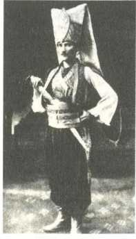

Mustafa Kemal'e ilham verenlerin başında Tevfik Fikret geliyordu. En kanlı vuruşmalarınsiperlerindebileTevfikFikretokurdu,notlardüşerdi.
"Fikri hür, vicdanı hür, irfanı hür nesiller" sözünün kaynağı, Tevfik Fikret'in dizeleriydi.
Hatta öyle ki... "Ben devrim ruhunu ondan aldım, Tevfik Fikret'i tanıyanlar, benimneyapmakistediğimikavrayacakkimselerdir"diyordu.
Cumhuriyet'in ilanından sonra Tevfik Fikret'e hürmeten Galatasaray Lisesi'yle hepyakındanilgilendi.
Mesela,bugünGalatasarayÜniversitesiolarakkullanılanbinayıMustafaKemal
tahsisetti.
Sadecefikrimanadadeğil...
YaşamgustosundadaTevfikFikret'tenetkilenmişti.
Giyimkuşamzevkiniörnekalıyordu.
Tevfik Fikret'in ikinci ölüm yıldönümünde evini, Aşiyan'ı ziyaret etmişti. Özel defterine "anma ziyaretinde bulunmakla kıvanç duyan Fikret dostları" diye yazmıştı.
TevfikFikret'inkullandığıeşyalarıinceliyordu.
Aşiyan'dagördüğübirçalışmamasasınınaynısınıyıllarsonraÇankayaKöşkü'ne
yaptırmıştı.
Sis,Tarih-iKadim,Ferda gibişiirleriniezberebilirdi.
"Tevfik Fikret'in Tarilı-i Kadim'i yok mu, işte o dünyada yapılması gereken bütündevrimlerinkaynağıdır"diyordu.
Rübab-ıŞikeste,Haluk'unDefteriözelkütüphanesindeyeralıyordu.
Cumhurbaşkanıolduktansonrabirgüngençlerlesohbetediyordu."Sorarımsize, bu milletin ve memleketin şan ve şerefle medeni dünya milletleri arasında yaşayabilmesi için lazım gelen her şeyi yazan, düşünen ve hayatını feda edenlerinbaşındakim gelir?" diyesordu.
NamıkKemaldiyenoldu, Ziya Gökalpdiyenoldu.
Dayanamadı...
"Fikretbeçocuklar,Fikretbeçocuklar"dedi.
"O bizdençokilerisinigörenbirinsandı"diyordu.
"Ne yazık ki biz onahâlâyetişemedik"diyordu.
*
Namık Kemal ise, Mustafa Kemal'in sadece isminin değil, zihin dünyasının da ayrılmaz parçasıydı.
Namık Kemal'in yasaklanmış fikirleriyle, sınıf arkadaşı Ömer Naci sayesinde tanışmıştı. O kadar benimsemişti ki, Vatan Kasidesi’ni teksir makinesiyle çoğaltıp,okuldagizlicedağıtıyordu.
NamıkKemal'inşiirlerini yazdığı defterivardı.
"Felekhertürlüesbab-ıcefasıntoplasıngelsin
Dönersemkahbeyimmilletyolundabirazimetten"mısraları,ensevdiğiydi.
VatanyahutSilistre'yi Manastır'daykenseyretmişti.
Gözyaşlarınıtutamamıştı.
Piyesinsonundaheyecanlahaykırmıştı.
“Tarihtekibütündevrimler,önceaydınkişilerinkafasındafikirhalindedoğmuş, zamanla toplumu sarmıştır, bizim Namık Kemal'imiz var, Türk milletinin asırlardırbeklediğisesioverdi"diyordu.
Vaveyla, İntibah, Osmanlı Tarihi, Şark Meselesi gibi eserleri, özel kütüphanesininbaşköşesindeydi.
Namık Kemal'in oğlu Ali Ekrem Bolayır, Tevfik Fikret'in elyazması Eş’ar-t Kemal isimli kitabını, kendisinin takdim yazısını ilave ederek 1923'te Mustafa Kemal'e hediye etmişti. .. Namık Kemal'le Tevfik Fikret'in kesiştiği bu kitap, MustafaKemal'inkütüphanesindeçokçoközel,bambaşkabiryeresahipti.
*
Henüz öğrenciyken Descartes, Kant, Durkheim, Voltaire, Jean-Jacques
Rousseau, Stuart Mill okuyordu. Sınıf arkadaşlarının deyimiyle “toplumun henüz halledilmemiş fikri cereyanlarıyla dimağını meşgul ediyor"du. “Darwin nazariyesinitakipediyor"du.
Divanşiirinemeraklıydı.
Fuzuli'yeaitaltışiiri,harfdevrimindensonraTürkalfabesiyle,kendielyazısıyla kalemealmış, OsmanlıTarihi kitabınınarasınakoymuştu.
“Canımıcananisterseminnetcanıma/cannedirki,kurbanetmeyimcananıma"
mısralarınısıksıkkullanırdı.
Manashr'danmezunoldu,İstanbul'ageldi.
HarpOkulu'nunkütüğüneşukünyeylekaydedildi:
“Selanik'teKoca
Kasım Paşa mahalleli gümrük memurlarından müteveffa Ali Rıza Efendi'nin mahdumu,uzunboylu,beyazbenizli,MustafaKemalEfendi."
Harbiye'deüniformasıylafotoğrafçektirdi.
Bufotoğraf,Atatürk'ünbilineneneskifotoğrafıoldu.
İstanbul'daakrabasıyoktu,tanıdığıyoktu.
Tatilgünlerindeyatılıizneçıkabilmesiiçinadreseihtiyacıvardı.Kayıtsırasında tanıştığıAliFuatCebesoy'danricaetti.
KuzguncukNakkaşbabaCaddesiüzerindeki16odalıköşk,MustafaKemal'inbu
topraklardakiilkikametgâhadresioldu.
İzinakşamlarıAliFuat'laaynıodadakalırlardı.
AliFuat'ınbabasıİsmailFazılpaşa,babacanadamdı.
Oğlu Ali Fuat'ın yastığının altına bir mecidiye, Mustafa Kemal'in yastığının altınaikimecidiyeharçlıkbırakırdı.
Oğlunanedendahaaz?
“Sen bugüne kadar harcadıklarına say, o gurbette okuyor, senden daha fazla ihtiyacıvardır"diyordu.
Yukarıdoğrukıvrıkbıyıklarpekmodaydı...
Mustafa Kemal haftasonu iznine çıkmadan önce bıyıklarını briyantinler, yukarı doğrukıvırıp yanağına bantlar,birsüreböyletutarakşekillendirirdi.
İzingünleriçokneşeliolurdu.
Genellikle Babıali'deki Stefan'ın kıraathanesine giderlerdi. Sirkeci'deki Yani'nin kıraathanesinegiderlerdi.
İstanbul'dakiilkyılında fazlacagezip tozmuştu.
Birincisınıfınındersnotlarınayansımıştı.
703öğrenciarasında29'uncuolabilmişti.
Budurumunözeleştirisiniyapacak ve notdefterineşunlarıyazacaktı:
"Gençlikhayallerinetutuldum.
Dersleri fazla ihmalettim.
Seneninnasılgeçtiğininfarkındaolmadım."
Neticede,Harbiye'yisekizincibitirecekti.
*
Fransızcasımükemmeldi.
O döneminAvrupa'sındahâkimlisandı.
İlerletmekiçinherfırsattaçabaharcamıştı.
Askeri lise öğrencisiyken mesela, kapitülasyonlar çerçevesinde kurulmuş olan misyonerokullarındanFrerler'inakşamkurslarınadevametmişti.
1941 yılındaröportajyapılanFrereRodriguez,MustafaKemal'iogünlerdenson derecenethatırlıyordu.
"Elindedaimakitaplarbulunurdu.
Gayetciddibirgençti.
Hafızamda iz bıraktı"diyordu.
Harp Akademisi'nde ikinci yabancı dil olarak Almancayı seçti. Almanca notu Fransızcadanbileiyiydi.
Sofya'dayken Alman bir ailenin pansiyonunda kirada oturuyordu. Ev sahibi HildaChristianus'tandersaldı.
Çeviriyapabilecekseviyeyegeldi.
Günlük hayatında kullanmadığı için Almancası köreliyordu. Bu nedenle her tanıştığı Alman'ı fırsat olarak değerlendiriyordu. Tedavi için gittiği Karlsbad'da bilebirAlmankadınöğretmendendersaldı.
*
Fransızgazetelerinitakipediyordu.
LeTemps,LeMatin,LeFigaro okuyordu.
Beyoğlu'nda bir Alman'ın işlettiği "Zeuve" isimli birahane vardı, Avrupa gazeteleribulunurdu.
Arkadaşlarıylasıksık buraya giderdi.
HemAlmanbirasıiçerhemgazeteleriokurdu.
Yabancılarınuğrakyeriydi.
Sahibi Alman olduğu için sarayın hafiyeleri pek sıkıştırmazdı, rahat sohbet ederlerdi.
Tünel'in Galata kapısından çıktıktan sonra köprü istikametine giderken solda köşedeüçkatlıbinavardı.
Birincikat İngiliz mallarısatılanbakkaliyeydi.
İkincikatİngilizLokantası'ydı.
Denizyolları müdürlüğünden emekli olmuş, "Con Paşa" lakabıyla tanınan bir Ermenitarafındanişletiliyordu.
Sadece öğle yemeği veriyordu. Bu lokantaya uğrayıp, İngiliz sodasıyla İskoç viskisiiçerlerdi.
İzingünlerindedolaşırkenbazenadalarauzanırlardı.
Ozamanlarperşembeyarımgün,cumatamgüntatil,cumartesihaftabaşıydı.Bir
perşembeakşamıAliFuatCebesoy'labirliktesonvapurukaçırdılar...
Büyükada'daçamlarınaltındasabahladılar.
*
1902 yılının temmuz ayında annesi ve kardeşiyle alakalı olarak hayatının en sıkıntılıhaftasınıgeçirdi.
Selanik'teşiddetlidepremolmuştu.
İstanbulgazetelerifelakethaberleriveriyordu.
Çok sayıda ölü ve yaralı olduğu, neredeyse ayakta bina kalmadığı, şehir hayatınınsöndüğü,insanlarıntarlalarakaçarakçadırlarayerleştiğiyazılıyordu.
Telefon yok, telgraf yok, annesinden kardeşinden haber alamıyordu. Selanik'e gitmekistiyordu,izinverilmiyordu.
21yaşındakiMustafaKemal,hayattailkkezkendisinibukadarçaresizhissetti.
Birhaftaböylekâbuslageçti.
Birhaftasonravaziyetanlaşıldı.
Deprem6.6şiddetindeydi...
Evet, insanlar sokaklarda yatmıştı, binalarda çatlaklar oluşmuştu ama, şehir merkezindeölüyoktu.
Annesiyle kardeşinin sorumluluğu, evin direği olma duygusu, genç adamın omuzlarınataşıyabileceğindenfazlayükbindiriyordu.
Harp Akademisi'ndeyken elyazısıyla hazırlayarak, “Vatan" adıyla tek sayfalık dergiçıkardı.Hürriyet,kadınhakları,milliyetçilikkonularındayazıyordu.
Gizlice,eldeneledağıtılıyordu.
Mezunoldu.
Sirkeci'dearkadaşlarıylaortakevkiraladı.
Biryandantayinlerinibekliyorlar,biryandanmemleketmeseleleriüzerineateşli sohbetlerediyorlardı.
Padişahıeleştiriyorlardı.
Eve gelip gidenler arasında Fethi adında biri vardı. Kendisini ordudan atılmış
subay olarak tanıtıyordu ama, aslında sarayın jurnalcisiydi. Bire bin katarak ihbaretti.
MustafaKemalgözaltınaalındı.
YıldızSarayı'ndasorgulandı.
Tutuklandı.
Bekirağabölüğünetıkıldı.
Bekirağabölüğü,Beyazıt'taikikatlıbinaydı.
Resmiadı' İstanbulMuhafızlığıDairesi"ydi.
Abdülhamidbaskısınakafatutanlarburayatıkılıyordu.
Lakabını,zalimliğiyleünlüeskikomutanıBekirağadanalmıştı.Berbatzindandı.
İşkencevardı,falakavardı.
Mustafa Kemal hakandaki iddialar iftira manzumesi gibiydi... “Okulda gizli gazete çıkarıp zararlı fikirler yaymak, gizli komite kurmak, elebaşı olarak Sirkeci'deki evde gizli toplantılar yapmak, Topkapı Sarayı'ndaki Hırka-i Şerifi ziyaret edecek olan Abdülhamid'in arabasına bomba atma planı yapmak, şahsi menfaat temin etmek üzere yardım sandığı kurarak para toplamak, ihtiyaçlı öğrencilerefaizleparavermek"lesuçlanıyordu!
Gün yüzü görmeyen, duvarları nemden ıslak, derin karanlık bir hücrede tek başınakaldı.
Keskinküfkokansamanyataktayattı.
Böbrekleriilkkezoradarahatsızlandı.
Sabahbirdefa,akşambirdefa,yarımtayın...
Birazdazeytinveriliyordu.
İkiaybuhaldeyatırıldı.
Nesavunmasıalındınemahkemeyeçıkarıldı.
“Yeteri kadar burnu sürtülmüştür" diye düşünmüş olmalılar ki, iki ay sonra serbestbırakıldı.
BırakılırbırakılmazteeŞam'atayinedildi.
İlkgörevyerisürgün'dü.
Mustafa Kemal'in anlatımına göre, imparatorluğun unutulmuş köşesiydi Şam...
Gözdençıkarılmış,kaderineterkedilmiş,sahipsiztopraklardı.
İstanbul'dangemiyebindi.
SekizgünlükseyahattensonraBeyrutlimanınageldi.
Otomobilyok,atsırtındaLübnan'ıgeçti.
Tam136kilometreatsürdü,Şam'aulaştı.
İlkgeceçadırdakaldı.
Yatakyoktu.
Samandoldurulmuşikiçuvalüzerindeuyudu.
1905 yılıydı.
Şehirortaçağıyaşıyordu.
Karanlıkbasıncasokaktahayatduruyordu.
Biravuçzengin,Baradanehrikıyısındakigenişbahçelievlerdesefadayken,halk sefaletiçindesürünüyordu.
Selanik'te Manastır'da İstanbul'da, bu üç modern şehirde büyüyen Mustafa Kemal,İslamiyetinArapyorumuylaiştebukasvetlişehirdetanıştı.
İslamiyetinTürkyorumuylakıyaslamayabaşlamıştı.
Kendisi gibi sürgüne gönderilmiş özgürlükçü subaylarla birlikte Vatan ve HürriyetCemiyeti'nikurdu.
Beyrut, Yafa, Kudüs,bugünküSuriye,Lübnan veİsrail'ikarışkarışdolaştı.Dört ay boyunca Sina çölünde kaldı. Golan tepelerinde çarpıştı. Çok bunaldığında, resmiizinalmadanİskenderiye ve PireüzerindenSelanik'egidiyordu.
Üçyılböyleyaşadı.
26 yaşındaydı.
26 yıllıkkısacıkömrününüçuzunyılınıburnunusürtmekiçinçalmışlardı,üç yıl sonranihayetSelanik'eatandı.
Dahaçokbilenmişti.
Fransa'daki Picardie manevralarına Osmanlı İmparatorluğu adına gözlemci sıfatıylakatıldı.Yüzbaşıydı,protokoledahildeğildi.Ama,isabetliyorumlarıyla, atak tavırlarıyla dikkat çekiyordu. Rütbesinin yetersiz olmasına rağmen kuralların dışına çıkıldı, tatbikatın başkomutanı Fransız mareşalin yemeğine davetedildi.
Uçak,tarihteilkkezbutatbikattasavaşsilahıolarakkullanıldı.
Pilotlarkeşifuçuşu yapıyor, elbombası,çiviatıyordu.
Bildiğinizçivideğildi...
Dört ucu sivri, balık oltası gibi çentikli, yere düştüğünde abajur ayağı gibi duran,nasıldüşersedüşsünbirsivriucuhepüsttekalan10santimlikçivilerdi.
Topukkırandeniyordu.
İlkelmayın'dı.
Yürüyüşgüzergâhlarınaatılıyordu.
Gece karanlığındafarkedilmiyordu.
Üstünebasanaskerinayakkemikleriniparçalıyordu.
Mustafa Kemal sadece dört yıl sonra Çanakkale'de üzerimizde dolaşacak olan uçakları, kafamıza atılacak olan mayın çivilerini, Osmanlı ordusunda gören ilk subaydı. Hava üstünlüğünün ne demek olduğunu, istikbalin göklerde olduğunu kavrayanilksubaydı.
(Picardie manevralarının sonunda Fransız pilotların konuk subaylara uçakla tur attırdığı, Mustafa Kemal'in binmek için hamle yaptığı, Osmanlı heyetinin başındakiAliRızapaşanınsonandakolundantuttuğu, biz binmeyelimdediği,o uçağınçakıldığı,böyleceMustafaKemal'inölümdendöndüğüiddiaedilir.
Hikâye heyecan vericidir ama, bunu doğrulayan belge bulunmuyor. Fransa havacılıkistatistiklermebakıldığında,
Picardiemanevralarındayaşanmışuçakkazasıgörünmüyor.Hattaoyılkomple
Fransa'dabileölümlesonuçlanmışuçakkazasıyok.
Buçakılmahikâyesinedayandırılarak,MustafaKemal'deuçakkorkusuoluştuğu
önesürülüyor.Bunedenleömrüboyuncauçağabinmediğianlatılıyor.
Halbuki, o günün uçakları günümüz manasında yolcu uçakları değildi. Bir kişilik, bazıları iki kişilik, savaş için üretilmiş uçaklardı. Henüz güvenilir teknolojideğildi,kanatlarıbileahşaptı,emeklemeaşamasındaydı.
Pilotolmayanbinemezdi.
Anca1935'teAnkara-İstanbularasındadenemeseferinebaşlayanuçaklarsadece
dört yolcu taşıyordu. Ankara'da havaalanı yoktu, Eskişehir aktarmalı,
Güvercinlik'e iniyordu, üç saatten fazla sürüyordu, sadece yaz aylarında uçuş
yapılıyordu. Türkiye'de uçak yolculuğu denilen kavram, nispeten büyük
uçaklarla1940'lardansonrabaşlayabildi.
Mustafa Kemal'in 1937'den itibaren hastalığı nedeniyle neredeyse trene bile binmesigüçleşmişti.
1938'dezatenrahmetlioldu.
MustafaKemal'de"uçakkorkusuvardı"diyenlerebakarsanız...1930'luyıllarda Türkiye'deBoeing'lerleAirbus'larlafalanuçulduğunuzannedebilirsiniz!
Mustafa Kemal'le aynı dönemde yaşamış yabancı liderlerin biyografilerini inceleyin...Uçağabinipbinmediklerinedairbilgibulamazsınız.Çünküyoktur.
Dünyanınöbürliderlerininogününyetersizşartlarındauçağabinmemesigayet
normalkabuledilirken,MustafaKemal'inbinmemesianormalmişgibianlatılır.
MustafaKemal'lealakalıkitaplarıntemelsorunlarındanbirimaalesefbudur.Bir kesim iyi niyetle yüceltmek isterken abartılı mucizevi hikâyelere sarılır, bir kesimkasıtlakaralamakisterkenzaman,mekânvealgıkaydırmalarıuydurur.) Picardie'yegidişgelişteParis'tekaldı.
GeceleriFethiOkyar'lamüziklikafeleridolaşıyorlardı.
Fransızkızlarıyladansediyorlardı.
Tasvir-iEfkâr gazetesininyazarıAbidinDaver'lekarşılaştılar.Onunhatıralarına göre"smokinli"ydiler.
Memlekete dönmeden önce gene Fethi'yle 14 günlük seyahat yaptılar. İsviçre, HollandaveBelçika'yıdolaştılar.
İstanbul'atayinedildi.
TamogünlerdeİtalyanlarTrablusgarp'asaldırdı.
Osmanlı'nınmecaliyoktu,askergönderemiyordu.
Ege'ye,Akdeniz'eçıkamıyordu.
Erzakbilegönderemiyordu.
Vaziyethazindi.
Yurtseversubaylarbirerikişeryoladüştü.
MısırüzerindenTrablusgarp'agitmeyebaşladılar.
OnlardanbiriMustafaKemal'di.
İlksavaşı'ydı.
İstanbul'danRusyolcugemisinebindi.
“GazeteciMustafaŞerif"adıylaİskenderiye'yegeldi.Sahtepasaporttu.
Güya, Tanin gazetesininyazarıydı.
Trablus'adoğruyolaçıkinahazırlıklarıyaparken,attepmesisonucugöğsünden
yaralandı,15günhastanedeyattı.
Mısır'ıboydanboyakatetmelerigerekiyordu.
İngiliz kontrollerinden sıyrılmak için arkadaşlarıyla birlikte bedevi kıyafetleri giydi.Kâhdevesırtında,kâhyürüyerekkavurucuçölügeçtiler.
Güzergâhüzerindeneköyvardınemezra.
Havakararıncaçadırkuruyorlardı.
Yemeklerinikendileripişiriyorlardı.
FuatBulcaaşçılığıüstlenmişti.
MustafaKemalfasulyeayıklıyordu.
Gündüzleri 50 derece, geceleri beş derece oluyordu. Kum fırtınalarıyla boğuşarak657kilometregittiler.
Sekizgünsürdü.
Tobruk'aulaştılar.
Trablus'agitti,Bingazi'yegitti.
Kabilereisleriniörgütledi.
Yerlihalkıdüzenlibirlikhalinegetirdi.
Çarpıştı,gayrinizamiharptaktikleriuyguladı.
Derne'yegeçti.
Gözündenyaralandı.
İlkdefa“gazi"oldu.
ArkadaşıFuatBulcaoanışöyleanlatıyordu:
“HedefimizKasr-ıHarun'du.
Kartacalılardankalmabirharabeydi.
Boğazboğazaboğuşmabaşlamıştı.
MustafaKemal'inkoşarakKasr-ıHarun'unmerkezbinasınadaldığınıgördüm.
İştebusıradagökyüzündegürültüduydum.
İkiİtalyanuçağıçokalçaktanuçuyordu.Elbombalarınıkoyverdiler.Patlamalar oldu.
MustafaKemal'inyanınavardığımda,onunyüzünütanınmazhaldebuldum.Bir
elindemendilivardı,sağgözünükapatıyordu,diğerelindekılıcıvardı."
Gözüiyileşmeden,sağkolundanvuruldu.
Aşırı kan kaybı yaşamasına rağmen, Eritre taburunu püskürtene kadar
askerlerininbaşındanayrılmadı.
BasıntarihindekiilkfotoğraflarıDeme'deçekildi.
The Ulustrated Landon Neıvs dergisinde yayınlandı. Dünyanın ilk haber dergisiydi.
Direnişi örgütleyen Osmanlı subaylarının tanıtıldığı fotoğraflı haberde, Enver paşaylabirliktegörülüyordu.
Birfotoğrafınaltındaşuyazıyordu:
"Osmanlı birliklerinin başkumandanı Enver bey, Deme bölüğüne komuta eden TürksubayıMustafaKemalilesohbetederken."
Birbaşkafotoğrafınaltındaşunotvardı:
"Aynel-MansurkampındakiSünusişeyhleri,başkomutanEnverBey'içadırının önündeselamlıyorlar/EnverBeyveMustafaKemal."
*
Derne'deyken emri altında görev yapanlardan biri, filmlere konu olacak kadar maceraperestbirkarakterdi.
Osmanefendi...
AsıladıStuartSmallwood'du.
İngiliz'di.
TheDailyChronicle gazetesininsavaşmuhabiriydi.
Boksördü.
Vücudugemicidövmeleriyledoluydu.
"Üzerinde güneş batmayan imparatorluğun" pek çok cephesine gitmiş, görüntülemiş,haberleştirmişti.
Muhtemelenörtülücasus'tu.
Ama gördüğü trajediler, şahit olduğu katliamlar, ülkesini ve kendisini sorgulamasına yol açmıştı, öbür tarafa savrulmuştu. Müslüman olmuş, sünnet olmuş, Osman adını alarak Osmanlı ordusuna katılmıştı. Teğmen rütbesiyle ve gönüllü olarak Trablusgarp'a gelmişti. Cesurdu, gözüpekti. İtalyan mevzilerine sızmayaçalışırkenşehitdüştü.
Balkansavaşıpatladı.
Selanikkaybedildi.
Bugünkü Libya topraklarında ömrünün 10 ayını feda eden Mustafa Kemal
gemiyleİstanbul'adöndü.
Çanakkale Boğazı'na atandı.
10 ay Bola yır'da kaldı.
Gelibolu'yukarışkarışkafasına yazdı.
Kaderadetaonu buraya getirmişti...
O günlerde henüz kendisi de farkında değildi ama, üç yıl sonra tarihin akışını değiştireceğiÇanakkale'yiöncedenincelemefırsatıyakalamıştı.
Üçbin yılönceTruvaSavaşı'nınyaşandığıyerleridolaştı.
Karadan ve denizden saldırı noktalarının o günkü konumlarıyla bugünkü şartlarını harita üzerinde karşılaştırdı. Harabeleri gezdi. İlyada'yı okumuştu.
Homeros'undestanındakiyertariflerinikeşfetmeyeçalıştı.
Achilleus'unmezarıolarakbilinentümülüsü ziyaret etti.
Milattan önce 334 yılında Asya seferine çıkan Büyük İskender, 35 bin kişilik devasaordusunuÇanakkaleBoğazı'ndangeçirmişti.
O geçişgüzergâhınıadımadıminceledi,notlartuttu.
Askeriataşeolarak Sofya'yagönderildi.
Çar Sarayı'nın karşısında Bulgaria Oteli'ne yerleşti. Oradan Splendid Palas'a taşındı, bu otelde altı ay kaldı. Sonraki dokuz ayını Ferdinand Bulvarı'nda iki 
katlıbirpansiyonun,tekpencereliodasındageçirdi.
EvsahipleriHildegardveGustavChristianus'tu.
Almançiftti.Yediyaşındakızlarıvardı.
Hilda'danAlmancaderslerialdı.
Kırmızıgülleriçoksevdiğiniöğrenmişti...
Herdersegiderkenbirkırmızıgülgötürüyordu.
KırmızıbirTürkhalısıhediyeetti.
Bir fotoğrafını da hatıra olarak verdi. Arkasına “hakikatli ve pek nazik madam Hilda"yazmıştı.
Aralarındasınırıaşmayanduygusallıkvardı.
Sofya'danayrıldıktansonraüçdörtyılmektuplaştılar.
(Hilda1960'taAlmanya'daöldü.)
GündelikişlerinihalledecekkadarBulgarcaöğrendi.
Operaya,baleye,çaypartilerinegidiyordu.
Sosyalortamlardaçokkolayiletişimkuruyordu.
MakedonaksanlıBulgarcasıylaekstrasempatikoluyordu.
Sofya'daykenyakındostolduğukişilerinbaşında,
Şakir Zümre geliyordu. Bulgar parlamentosundaki Türk milletvekiliydi. Şakir sayesindeBulgarmilletvekilleriyletanışıyordu.
Ülkedeki“ensevilenyabancı"halinegelmişti.
KurtuluşSavaşıbaşlayıncaSofyagünlerininmeyvelerinitoplayacaktı.Bulgarlar arasında kurduğu arkadaşlık ilişkilerini kullanarak, yine Şakir aracılığıyla, Karadeniz yoluyla Anadolu'ya silah, cephane ve yiyecek gönderilmesini sağlayacaktı.
Mayıs 1914... Sofya Orduevi'nde Kültür Bayramı vesilesiyle kıyafet balosu düzenlenmişti.
Şehirdekidiplomatlarüzerindepsikolojiketkiyaratmakistedi,düşündütaşındı.
İstanbul'dan,AskeriMüze'den“uçbeyi"kıyafetigetirtti.
(Bugünbilehâlâkabaca“yeniçerikıyafeti"denirama,aslındaokıyafet“serhat beyi,uçbeyikıyafeti"ydi.)
Salonagirdiğindealkıştufanıkoptu.
Balonungözdesiolmuştu.
Gecenin sembolik jürisi en beğenilen kıyafet ödülünü Mustafa Kemal'e verdi.
Çarbizzatelinisıkarakkutladı.
Sofya'dakiİspanyamaslahatgüzarışarkkültürününhayranıydı.Sefaretbinasında Türk halılarıyla süslediği özel odası vardı. Balonun çıkışında Mustafa Kemal'i davet etti. Hafızamıza kazınan efsane fotoğraf, o gece İspanya Elçiliği'nde çekildi.
Tarihimizin en önemli karelerinden biri olan bu fotoğraf, 1921 yılına kadar kimsetarafındanbilinmiyordu.
20 Aralık 192l'de İstanbul'da, Tevhidi Efkâr gazetesinin birinci sayfasında yayınlandı.
Herkesogünöğrendi.
Çünkü... Kurtuluş Savaşı sadece Anadolu'nun değil, Bulgaristan'daki Türklerin de milli mücadelesiydi. Soydaşlarımız, Mustafa Kemal'in bu fotoğrafını çoğaltmış,evlerine,dükkânlarınaasmışlardı.
YüreklerekazınanMustafaKemal'in,duvarlarayapıştırılanilkposteriydi.
Sofya'da tüccarlık yapan Yasin bey isimli bir soydaşımız, bu fotoğrafın kopyasını Tevhidi Efkâr gazetesinin sahibi ve başyazarı Velid Ebuzziya'ya göndermiş,İstanbul'dayayınlanmasınısağlamışh.
BirinciDünyaSavaşıpatladı.
Kavuşmalarıimkânsızdı.
Bavullarınıtopladı.
KırıkbirkalpleSofya'danayrıldı.
ÇanakkaleBoğazı'naatandı.
OrientExpress'leİstanbul'ageldi.
Tekirdağ'danHalepisimlivapurabindi.
AnafartalarKahramanı...
Gelibolu'yaayakbastı.
Halepvapuru,normaldeİstanbulBoğazı'ndaçalışan,yandançarklışehirhatları vapuruydu. Savaş nedeniyle cepheye erzak götürüyor, dönüşte yaralıları taşıyordu.
MustafaKemal'igetirdiktenkısasüresonra,MarmaraDenizi'nesızmayıbaşaran
İngilizE-11denizaltısıtarafındanvuruldu,200şehitlebirliktesularagömüldü.
Halep vapuru Mustafa Kemal'i taşırken vurulup batsaydı, tarih başka türlü akacaktı... Kader çizgisi, henüz dünya sahnesine çıkmamış olan Türkiye Cumhuriyeti'nebirkezdahakılpayıyardımetmişti.
ÇanakkaleSavaşıbaşladı.
Havada mermilerin çarpıştığı cayır cayır ateş hattında, elinde kamçısıyla dolaşıyordu, adeta parkta gezintiye çıkmışçasına rahat davranıyordu. Arkasına saklanılan kum çuvallarının üstüne oturup sigara içiyordu, bulaşıcı ölüm korkusunakarşıcesaretaşılıyordu.
Ölülerin toplanması için karşılıklı ateşkesler yapıldığında, çavuş üniforması giyerek toplayıcılar arasına karışıyordu. Böylece, düşman siperlerini olabildiğinceYakındanvebizzatgözlemliyordu.
Askerlerinin moralini ayakta tutmak, düşmanın moralini bozmak için
görülmemişyöntemuyguluyordu.
Öğleyemeklerinibandoeşliğindeyediriyordu!
İngilizler adeta deliriyordu. Her öğlen müziğin geldiği yöne doğru ağır ateş
açıyorlardı.Bombardımanarttıkça,marşlarıntemposudainadınaartıyordu.
Çarpışmanın en şiddetli döneminde İstanbul gazetelerinin başyazarları
Çanakkale'ye getirilmişti. Gördüklerini yazmaları için siperler gezdirilmişti.
MustafaKemal,gazetecileresoğukayranikramettirdi,bandotakımınadönemin
popülervalslerindenolanCarmenoperetindenparçalarçaldırdı!
Tasvir-i Efkâr gazetesinde, Serveti Fünun mecmuasında fotoğrafları çıkmaya başladı.
Bu haklı şöhret, Harbiye Nezareti'ndeki paşalar arasında büyük rahatsızlık yaratıyordu.
Sansürlenmeyebaşlandı...
HarpMecmuası'nda“Çanakkalekahramanı"başlığıylafotoğrafıyayınlanacaktı, şak,baskıdurduruldu.
Fotoğrafçıkarıldı.
Halktarafındantanınmasıistenmiyordu.
Adısanıduyulmasınisteniyordu.
İkdam gazetesinin yazı işleri müdürü Yakup Kadri Karaosmanoğlu yıllar sonra TRT'deanlatacaktı.
“Enver paşa tarafından 'Mustafa Kemal'den bahsedilmesin' diye bize emir verilmişti"diyecekti.
*
Fotoğrafıbilesansürlenmeyeçalışılırken,kaderincilvesiolsagerek...Tarihteki ilkMustafaKemalyağlıboyatablosu,Çanakkale'deyapıldı!
AvusturyalI ressam Victor Krausz, Türk cephelerinde dolaşıyor, savaş resimleri
yapıyordu. Mustafa Kemal'i tesadüfen görmüştü, güneş yanığı yüzünü heykele benzetmişti... Kendisinden izin alıp körüklü makinesiyle fotoğrafını çekmiş, portresinituvaleresmetmişti.
Savaşın ruhunda yarathğı olumsuz etkiyi azaltmaya çalışan Mustafa Kemal, biraz olsun huzur bulmak için edebiyata sarılıyordu. İstanbul'daki arkadaşı madamCorinne'ericamektuplarıyazıyordu.
"Hayatın hoş ve iyi taraflarını hissettirecek, savaş yüzünden oluşan sert karakterinibirazolsunyumuşatacakromanlargöndermesini"istiyordu.
Çadırındaki eşyalar, portatif bir demir karyola, portatif bir ahşap masa, masasının üstünde bir gemici feneri, karyolasında bir Siirt battaniyesinden ibaretti.
Battaniye,AliFuat'ınhediyesiydi.
*
Çanakkale'de
kazandığı
Kılıçlı
Gümüş
Liyakat
Madalyası'm
diğer
madalyalarındanayrıtutardı.Göğsündençıkarmazdı.
*
Conkbayırı'nı temizlemek için süngü hücumu başlatmıştı. Aniden bir şey çarptığınıhissetti...
Elini göğsüne götürdü, üniforması yırtılmıştı, kan vardı. Sağ cebindeki saatine şarapnelisabetetmişti.
Oakşam,LimanvonSanders'inkarargâhınageldi.OrtaklisanlarıFransızcaydı.
LancashiresveWiltschiresalaylarınıntamamenimhaedildiğinianlattı.Sonrada paramparça saatini cebinden çıkararak, "bugünün muvaffakiyet hatırası olarak kabulbuyurmanızıricaederim"dedi.
Alınangeneralhadiseyibiliyordu.
O saatin madalyadan değerli olduğunun farkındaydı. Teşekkür etti, elini cebine attı,kendisaatiniçıkardı.Altın'dı.
Arkasında imparatorluk tacı ve L.S. harfleri kazılıydı. "Ben de bunu kabul buyurmanızıricaederim"dedi.
Mustafa Kemal'in saati İsviçre malıydı, Omega'ydı. Harbiye'de öğrenciyken
Otarihlerdekifiyatı600İsviçrefrangıcivarındaydı.
15yıldırbusaatikullanıyordu.
Atatürk vefat edince, hayatına dair eşyaların müzeye dönüştürülmesi için çalışma başlatıldı. En değerli parçalardan biri, Liman von Sanders'e armağan ettiğikırıksaatti.Almangeneral1929'daölmüştü.
Mirasçılarıylatemasageçildiama...
Saatonlardadeğildi.
LimanvonSanders'inevisoyulmuştu.
Madalyaları, kılıçları, özel eşyalarının çoğu çalınmıştı. Mustafa Kemal'in saati deoçalınanlararasındaydı.
Türkiye Cumhuriyeti'nin söz konusu hatıra saati arama çabaları 1939 yılında Almangazetelerindehaberoldu.
İhbaryağmayabaşladı.
Çoğuasılsızdı.
Berlinbüyükelçiliğimizebizzatgelenbirpapazınanlattıklarıisegayetciddiydi.
Saatinkimdeolduğunuismiyle,adresiylesöylüyordu.
Berlin büyükelçimiz Hamdi Arpağ derhal dışişlerini bilgilendirdi. İzlenmesi gereken yol üzerinde konuşuluyordu ki, İkinci Dünya Savaşı patladı. Saatin izi kayboldu.
Henüz dünya savaşı patlamadan önce, Almanya'daki arama çalışmaları devam ederken,saatiüretenOmegafirmasıdadevreyegirmişti.Hatırasaatibulana250
binİsviçrefrangıödülvaatedilmişti.
250binİsviçrefrangı,ogünküparayla70binlirayatekabülediyordu.1939'da
öğretmen maaşı sadece 50 liraydı. Omega'nın ortaya koyduğu ödül bu denli büyüktü.
MustafaKemal,LimanvonSanders'inarmağanettiğialtınsaatikullanmadı.
Vurulduğusıradahemenyanında,maalesefisminibilmediğimizgençbirteğmen
vardı,bileğindekiZenithmarkasaatiçıkardı,komutanınaverdi.
Anafartalar kahramanı, kendi öğrencilik saatinin yerine yıllarca bu saati kullandı.
Temmuz1922...
BüyükTaarruz'unarifesiydi.
İngiliz general Charles Townshend milletvekili sıfatıyla Konya'ya geldi, İngiliz parlamentosuadınapazarlıketmekistiyordu.Akşehir'debuluştular.
Akşam yemeği için sofraya oturduklarında, Mustafa Kemal kolundaki saati çıkardı, İngiliz generale uzattı. “Biz Türklerde âdettir, misafire hediye veririz, benimhediyembiremanettir,busaatibanaAnafartalar'dabirTürkaskeriverdi, hayatını kaybeden bir İngiliz subayından almış, saatin arkasında o subayın künyesi var, o zamanlar da şimdiki gibi savaştaydık, ailesini arayıp bulma imkanımyoktu,sizdenricam,İngiltere'yedönüşünüzdeosubayınailesinibulun ve emanetini teslim edin, minnettar olurum" dedi. Saatle birlikte, elinden düşürmediğikırmızımercantespihinidehediyeetti.
General Townshend o geceye dair hatıralarını şöyle anlatacaktı: "Pek çok hükümdarla devlet başkanıyla görüştüm, defalarca resmi-özel konuşmalar yaptım,ogecekikadarezildiğimihatırlamıyorum!"
(Anafartalar adı, savaşın kırılma noktasında yer alan iki köyümüzün ortak adıydı, küçük Anafarta köyü, büyük Anafarta köyü... Anafarta kelimesi, yerel ağızda "rüzgâra karşı, çok rüzgâr alan yer" manasına geliyordu. Anafartalar Kahramanı'nın emperyalizm rüzgârına karşı durduğu yer, coğrafyanın sözlük anlamınadaoturuyordu.) Tabip yüzbaşı Hasan Ragıp, Kızılay Hastanesi'nde görevliydi. Eşi Erica, Alman'dı,hemşireydi.
Aynısahrahastanesindeydi,gönüllügelmişti.
Evyoktu,barakabileyoktu,çadırdakalıyorlardı.
Ragıp devamlı ameliyattaydı. Erica kan revan içindeki gazilerimizin
başucundaydı, yara sarıyor, ana şefkatiyle kınalı kuzularımızın saçını okşuyor, öğrendiği kırık dökük Türkçesiyle moral veriyor, paramparça evlatlarımızı hayatabağlamayaçalışıyordu.
GazilerimizErica'yahemşiredemiyordu...
"Anahatun"diyorlardı.
İngiliz keşif uçağı koordinat saptadı, İngiliz zırhlılarından adrese teslim bombardımanbaşladı...
Çatısında20metreboyunda"kırmızıay"bulunanhastaneyigöregöre,bilebile vurdular.
Ragıpyaraalmadankurtuldu.
Ericahayatınıkaybetti.
"Anahatun"içinaskeritörendüzenlendi.
Sevdiği adamın vatanında, Yalova köyünde, şehitlerimizin yanında toprağa verildi.
Kabrinin kitabesine "ifa-yı vazife esnasında top mermisiyle terk-i hayat eden madam"yazıldı.
Mustafa Kemal, âşık olduğu adamın peşinden Çanakkale'ye gelen hemşire
Erica'yıhiçunutmadı.MilliMücadele'yedekatılantabipyüzbaşıHasanRagıp'ı
yanınaaldı,ÇankayaKöşkü'ndekiözeldoktorlarındanbiriyaptı.
Çanakkale'dekandurmuyordu.
Tıbbimalzemeyetişmiyordu.
Kurşunyiyenbacaklarkollar,iplesıkılıyordu.
Yarayaottıkanıyordu.
Otyoksaçamurkullanılıyordu.Deliklersıvanıyordu.
Kurtlananyaralarınıdenizsuyuylatemizlemeyeçalışangazilerimizinferyatları, gecelerinkaranlığınıyırtıyordu.
Daracık alanda binlerce ölü beden yatıyordu. Milyarlarca sinek üşüşmüştü.
Kavurucusıcaktaiyiceağırlaşankoku,sineksürülerinimıknatısgibiçekiyordu.
Anzak askeri Harold Broughton hatıra defteri tutuyordu. "Vücudunun eti göründüğünde hemen sineklerle kaplanırdı, ağzımızın çevresinde, yaraların çıbanlarınüzerindeydiler,gerçekbirlanetti"diyeyazmıştı.
BinbaşıClaudePosterdagünlüktutanlardandı.
"Gecelerimümkündeğiluyuyamıyoruz,uyumayıunuttum,gündüzvaktigözünü kapatmak istediğinde o korkunç kara bulut, vızıldayan kanatları, yapışkan ayaklanvepisliklekaplıhortumlarıylainsanıçıldırtmanıneşiğinegetiriyor"diye notalmıştı.
Korunmakiçinicatlaryapılıyordu.İngilizlerebaşlarınageçirmeleriiçinbüzgülü torbadağıtılmıştı.
Asteğmen Herbert hazin manzarayı şöyle tarif ediyordu: "Hemen önümde bir grup Türk ölüsü vardı. Hepsinin başları geriye yatmıştı. Ağızlarının açık olduğuna dikkat ettim. Açık ağızlardan içeri sinekler doluyor, sonra bize geliyorlardı. Yemeklerden önce cesetleri ziyaret ediyorlardı. Ekmek yiyorsan, ağzına yaklaşıncaya kadar lokmanın üzerine konuyorlardı, ekmeği atamazdın, atarsanyiyeceklokmabulamazdın,öyleyemekzorundaydın."
Tuvaletlereilkelbiledenemezdi,ilkelötesiydi.
Siperlerdekovalarvardı.
Sağlıkekipleritoplar,herhangibiryereboşaltırdı.
Siperlerin gerisinde iki üç metre derinliğinde geniş çukurlar kazılırdı. Oturma yeri, çukurun üzerine konulan kalastı. Dengede durmaya çalışarak çömeliyor, işini görüyordun. Dengesini kaybettiği için veya kalas kırıldığı için çukura düşenleroluyordu.
Dizanterisalgınıvardı.
İshallebaşaçıkılamıyordu.
AnzakeriHaroldPhilingürperticişekildetarifetmişti.
"Öylesine bitkin düşersin ki, bir kedi yavrusu kadar aciz kalırsın. Doktor dün gece kaç kere tuvalete gittiğimi sordu, 16 kere dedim. Paçalarıma kan damlıyordu. Dizanteri insanı öldürmeden önce onurunu elinden alan bir
hastalık."
TabipyüzbaşıAbdülkadir,siperleriçin"çokelemliydi"diyordu,insanınyüreğini kanatacak kadar gerçekçi anlatıyordu: "Önde yatan şehitlerimiz ve düşman ölüleri o derece sıktı ki, cuma namazında bir camide secdeye yatmış cemaati andırıyordu.Yalnızbuyatışgayrimuntazamdı.Ebedibirsükunadalmışşehit ve maktüllerin mahşeri halinde görünüyordu. Ölülerin ağzına burnuna sinekler yumurtlamıştı. Buralarda büyüyüp beslenen kurtlar tombul ve beyaz birer şekil almış halde siperlere karınca gibi yürüyordu. İtiraf ediyorum... Mektepte kadavralar üzerinde anatomi dersi yapmış ve birçok otopsi yapmak mecburiyetindekalmışbirdoktorum ama, önhattakikokuburnumdançıkmadı, etyiyemezoldum!"
İçmekiçinyeterlisuyoktu.
Kuyusuyuhastalıkgetirmektenbaşkaişeyaramıyordu.
Yıkanmayıunutmuşlardı.
Bitistilasıvardı.
Bitler pantolon dikişlerinin arasına saklanıyorlardı, kurtulmak için dikişlerin arasını kor parçalarıyla yakıyorlardı. Battaniyeye bulaştıysa, battaniyeyi yakmaktanbaşkaçarekalmıyordu.
Karıncalarıkeşfettiler.
Bitler karıncalardan kaçıyordu. Gömlekleri karınca yuvasının üstüne serince, tertemizoluyordu!
Anzak eri Steve Moyle, korku filminden farksız olan "su hatırası"nı şöyle hatırlıyordu:"Mataralarımızıkuyuyasarkıtırdık.Sudahep garip birtatolduğunu söylerdik.
Birgünistihkâmcılargeldi,kuyudanaşağıyaçengellerinisalladılar.Çürümüşbir cesetçıkardılar."
Çanakkalebuydu.
AnafartalarKahramanı'nagöreÇanakkaleneydiderseniz?
Yıllarsonraşöyleanlatacaktı...
“SizeBombaSırtıolayınıizahetmedengeçemeyeceğim.
Karşılıklısiperlerarasındakimesafesekizmetreydi.
Yaniölümmuhakkaktı.
Birinci siperdekilerin hiçbirisi kurtulmamacasına düşüyor. .. İkinci siperdekiler onlarınyerinialıyordu.
Nekadarimrenilecekbirsoğukkanlılık,tevekkül.
Öleni görüyor, üç dakikaya öleceğini biliyor ve en ufak bir çekinme bile göstermiyor.Sarsılmakyok.
Okuma bilen Kur'an-ı Kerim okuyor, bilmeyen Kelime-i Şahadet getirerek
yürüyor.
Eminolmalısınızki,Çanakkaleiştebuyüksekruhtur."
EmrindekierlerdenbiriTopkapılıMehmet'ti.
Eskitulumbacıydı.
Kolundameşinbileklik,boynundamuskataşıyordu.Kabadayıydı.
MustafaKemalbubıçkın
askerinimangakomutanıyaptı.Entehlikeligörevleriheponaveriyordu.
“GöreyimseniTopkapılı"diyereksırtınısıvazlıyor,herdefasındabirbölükasker göndermişkadarneticealıyordu.
Topkapılı'ylatemasınıhiçkoparmadı.
19 Mayıs'ta Samsun'a çıktığında, gizli istihbarat için kurduğu Mim Mim Grubu'nunbaşınagetirdi.
Anadolu'ya silah, cephane, adam kaçıran bu yurtsever kabadayı "Topkapılı CambazMehmet"adıylanamsaldı.
Sustalı,tabancalıonlarcaelemanıvardı.
Sokaktamüthişbiristihbaratağıkurmuştu.
Yaprakkımıldasahaberioluyordu.
Filmiçekilmesigerekenoperasyonlaraimzaattı.
Mesela, İngiliz işgal kuvvetleri komutanı general Harrington'ın makam
otomobilini çaldı, kendisi sürerek götürdü, Ankara'da Mustafa Kemal'e hediye etti!
Bizzat Atatürk tarafından İstanbul milletvekili olması için teklifte bulunuldu, teşekkür ederek kabul etmedi. "Koşum tutmaz bir insanım, müsaade buyurun serbestkalayım"dedi.TBMMtarafından1500liramaaşbağlandı,onudakabul etmedi,Kızılay'abağışladı.
MustafaKemalpara,makam,şöhretdeğil,insanbiriktiriyordu.
TopkapılıCambazMehmetbunlardanbiriydi.
Selanik'tenSofya'ya,Trablus'tanÇanakkale'yeinsanbiriktirdi.
Kurtuluş Savaşı'nı başaran kadroya isim isim bakın lütfen... Neredeyse hepsi, Mustafa Kemal'in ömrü boyunca biriktirdiği ve temasını kesmediği yetenekli insanlardı.
Arıburnu'ndasiperlerigeziyordu...
Kumçuvallarınaçivilerleçakılmışkâğıtlargördü.
Kur'an-ıKerim'denayetlerdi,mürekkepleyazılmıştı.
"Kimyazdı?"diyesordu.
"İstanbulluMacid"dediler.
"Çağırın"dedi.
Macidkoşarakgeldi.
Komutaneliniomzunakoydu...
"Bunlar sanat eseri yazılar, memleket böyle sanatkârları kolay yetiştirmiyor, derhalsiperdençık,İstanbul'adön,yazmayadevamet"dedi.Terhisetti.
O Macid, dünyaca ünlü hat sanatçımız Macid Ayral oldu. Yazı sanatında
Osmanlı'yla Cumhuriyet arasında köprü kurdu. Şişli, Bebek, Davutpaşa gibi İstanbulcamilerine,TopkapıSarayı'nayazılaryazdı.
BigalıMehmetçavuş,Seddülbahir'devuruşuyordu.
Mermisibitincetüfeğinikırarakİngilizlerefırlatmıştı.
Tüfek parçası kalmayınca taş fırlatarak mücadele etmişti. İstihkâm küreğiyle saldırmıştı.
Başından ciddi şekilde yaralanmıştı, avuçları paramparçaydı ama, İngilizleri püskürtmeyibaşarmıştı.
MustafaKemalbukahramanlığıduydu...
BigalıMehmet'egümüşsigaratabakasıhediyeetti.
ÇanakkaleBoğazıkomutanıCevatPaşa'yaraporyazdı.
Örnekolmasıiçinödüllendirilmesinitalepetti.
MuharebeMadalyasıverilmesinisağladı.
Buolay,İstanbulgazeteleritarafındanhaberleştirildi.
BigalıMehmet,Çanakkale'ninsembolühalinegeldi.
Mustafa Kemal tarafından madalya sahibi yapılan, memlekete tanıtılan Bigalı Mehmet çavuş, "Mehmetçik" kavramının isim babası oldu. Bigalı Mehmet'in verdiği ilhamla, bu olaydan sonra Türk askerine "Mehmetçik" denilmeye başlandı.
Bigalı Mehmet savaştan sonra evine, Biga'nın Bahçeli Köyü'ne döndü.
Kendisineteklifedilenmaddiyardımlarıaslakabuletmedi.Tabaksoyadınıaldı
ama, daimaMehmetÇavuşolarakanıldı. 3Şubat 1964'te86 yaşındaykenvefat etti,köyündetoprağaverildi.
Çanakkalegeçilmedi.
Geçilemedi.
İngilizlerellerindekalan 134 binasker, 14 bin at,
400civarındatop ve ikibinmotorluaracıtahliyeetti,Gelibolu'dançekildi.
MustafaKemalogünüşöyleözetleyecekti:
"Kaçtılar veyalnızca konservekutusubıraktılar!"
*
Abdülhamid,ogünlerdetahttanindirilmişpadişaholarakBeylerbeyiSarayı'nda göz hapsinde yaşıyordu. Çanakkale zaferinin ardından hatıra defterine şunları yazdı: "Düşmantasınıtarağınıtoplayıp,askerlerininyarısınıdenize,yarısınıgemilerine dökerek çekip gitti. Bu büyük zaferi Mustafa Kemal adında bir miralay kazanmış.Allah,devletinehizmetedenlerden razı olsun.
OğlumAbidefendibuMustafaKemalbeyletanıştığınısöyledi,Beylerbeyi'nde
görevli yüzbaşı Salih'in (Bozok) arkadaşıymış, ara sıra arkadaşına yemeğe
geliyormuş,Abidefendiylebumünasebetledostolmuşlar.HattaMustafaKemal kendisine iki ceylan yavrusu hediye etmiş. Bundan memnun oldum. Devletin yüzünü ağartmış bir paşanın oğlum Abid efendiye yakınlık göstermesi, bir şahsiyetiolduğunuanlatıyordu.
Oğlumamünasipbirmukabeledebulunmasınıhatırlattım. Biraz vaktihalimolsa
'biraltınsaat'
diyecektim ama, hem dedikodusundan çekindiğim hem oldukça müzayaka
(geçimdarlığı)içindeolduğumiçinbirşeysöylemedim.
Bir defasında Beylerbeyi'ne geldiğinde bana haber verdiler, sırtında bir pelerin vardı, sıradan askerlere benzemiyordu, tehlikeli bir sükuneti vardı, Enver paşanınkendisindennedençekindiğiniozamananladım.
Çanakkale'deİngiltere,Fransagibiikibüyükdevletinordusunuvedonanmasını
durdurdu,yüzgerietti.Muvaffakiyetiiçinduaettim."
Kaderinibretvericidönüşümüydü.
MustafaKemal'iharpakademisindenmezunolduğundatutuklatanAbdülhamid,
12yılsonraaynıMustafaKemaliçinbunlarıyazmıştı!
Saray tarafından vatana ihanetle suçlanan Mustafa Kemal, şimdi aynı saray tarafındanvatankahramanıolarakalkışlanıyordu,yakındaaynısaraytarafından genevatanaihanetlesuçlanacaktı!
Diyarbakır'aatandı.
Paşaoldu.
35yaşındaydı.
VanGölü'ndenbaşladı,Sason,Mutki,Silvan,Garzan,Malabadi,Kulp,Dargeçit,
Midyat, Palu, Hizan, Mardin, Siirt, Bingöl, Elazığ, bölgede basmadık yer bırakmadı.
Bitlis'i,Muş'udüşmanişgalindenkurtardı.
Mustafa Kemal'e yenilen Rus genelkurmayının raporunda şu değerlendirme yapılmıştı:
"Türkkomutanlarıarasındahalktarafındanençoksaygıgöreni,cesur,muktedir, azimkâr, azami derecede müstakil fikir sahibi, herkes tarafından itibar görüyor, şöhretini Bingazi'deki başarılarıyla kazandı, Çanakkale Savaşı'nda iki defa durumukurtardı."
Odönemdetümyaşadıklarımhatıradefterinekaydediyordu.1916yılınınkasım
ve aralık aylarında gün gün düştüğü notlar, mücadele ettiği bölgenin içler acısı haliniortayakoyuyordu.
"Batman köprüsünü geçer geçmez, yolda ölü gibi yatmış adamlar gördüm.
Açlıktan...Muhacirmişler.Açlıktanölmüşbeygirlergördüm."
"Yürüyen150kişiyetesadüfettik,muhacir,Bitlis'eavdetediyorlar,iaşeleriyok, cümlesiaç,sefil,ölümemahkûmhalde..."
"4-5yaşlarındabirçocuğuebeveyniterketmiş,birkarıkocanınpeşinetakılmış, onları ağlayarak yüz metreden takip ediyor. Kendilerini durdurdum, çocuğu yanlarına almadıkları için azarladım. Bizim evladımız değildir dediler, almadılar."
"Yol boyunca insan laşeleri vardı. Bitlis'te Şerefiye Camisi'ni gezdim, harap olmuş,hayvanatlaşeleriyledoluydu.Hastaneyapılanhanelertemizlenirken10-15kadarİslamkadınınınkesikbaşıbulunmuş."
"Bitlis,Pompeiharabelerinihatırlatıyordu."
Manzarabuydu...
Üççocuğasahipçıktı.
Bitlis yakınlarında Ömer adında 12 yaşında bir çocuk buldu, teslim edecek kimse bulamadı, yanına aldı. Birkaç gün sonra aynı yaşlarda İhsan adında sahipsizbirçocukbuldu,onudamecburenyanınaaldı.
Hatıra defterindeki kayıtlara göre, Ömer'le İhsan'ı bir süre karargâhında barındırdı,okuma yazmaöğretmeyeçalıştı,MehmetEminYurdakul'un Yaşamak Kavgasışiiriniezberletti.
Maalesef başka bilgimiz yok. Ömer ve İhsan'la alakalı olarak hatıra defterinde sadecebunotlaryeralıyordu.
MuhtemelenilkfırsattaDiyarbakır'dakiyetimleryurdunaemanetetmişti.
SahipçıktığıüçüncükimsesizçocukAbdürrahim'di.
Van'dabuldu,üçyaşındaydı.
İstanbul'agönderdi.
Kendiannesine, Zübeyde'ye emanetetti.
En zor şartlarda bile yaşadığı ortamı güzelleştirmeye çalışırdı. Portakal kasasından bozma masalarda yemek yemekten hiç hoşlanmıyordu. Tabur teftişi sırasında, tabur komutanı İsmail Şumnu'da bir masa ve masa örtüsü gördü.
Binbaşı İsmail Şumnu bu masa ve örtüsünü Çanakkale'de İngilizlerden ele geçirmişti.
MustafaKemalsatınalmakistedi ama, cebindeparasıyoktu.Neyapsın?
TakasteUifetti...
Trablus'ta İtalyanlardan ele geçirdiği bir dürbünü vardı. "Ben sana dürbünü vereyim,senbanamasaylamasaörtüsünüver"dedi.
İsmailŞumnukabuletti.
Trablushatırasıdürbünüverdi.
Çanakkalehatırasımasaylaörtüsünüaldı.
Ergani madenini ilk kez o zamanlar, 1916 yılında incelemişti. Muhteşem potansiyelinoilkelşartlardahebaolmasınaçoküzülmüştü.
Aslına bakarsanız, bölgenin ekonomik kaynaklarını araştırmak, Mustafa
Kemal'in görevi kapsamında değildi. Ama, adeta geleceği planlıyordu...
Cumhuriyet'iilanederetmezhayatageçirdiğiilkşirketlerdenbiri,ErganiBakır İşletmeleriolacaktı.
*
Diyarbakır'da Semanoğlu Köşkü'nde kalıyordu. İki katlı, geniş eyvanlı, siyah beyaz kesmetaşlarlaörülmüş,tipikDiyarbakıreviydi.
Serinlikverenmermersüshavuzununbaşındaotururken,yanıkbirsesduydu...
Köşkün yanındaki ağaçlık alanda gençler piknik yapıyor, biri gazel okuyordu.
Yaverinigönderdi,çağırındedi.Getirdiler.
MehmetCelalettin'di.
18yaşındaydı,UluCami'demüezzindi.
Oturttumasasına, “bana türküokurmusun"dedi.
Dinledi dinledi dinledi, ses, usul, makam muhteşemdi, elini omuzuna koydu,
“bakCelal"dedi,“memleketimizbirgünhuzurakavuşacak,senbugüzelsesinle
İstanbul'daplaklaraokuyacaksın,o zaman plaklarınüstüneŞarkBülbülü yazdır, sengerçekbirbülbülsün."
Busamimiteşvik,kehanetedönüşecekti.
Mehmet Celalettin yüreklenecek, yerel derlemelere başlayacak, Cumhuriyet'in ilanından sonra İstanbul'un yolunu tutacak, 1931'de plak yapacak, 14 yıl önce Mustafa Kemal'in kendisine verdiği unvanı “Şark Bülbülü" diye plağın üstüne yazdıracak, kapışkapışgidecekti.
Soyadıkanunuçıkıncaadınıdeğiştirip“CelalGüzelses"yapanogençmüezzin,
“Esmerim Biçim Biçim, Hele Yar Zalım Yar" gibi efsaneleri müziğimize kazandıracaktı.
MustafaKemalDiyarbakır'da11aykaldı.
MekkeveMedine'yikapsayanHicaz'aatandı.
Hicaz kelimesi Arapçada “engel, bariyer" anlamına geliyordu. Ve aslında bu atamaMustafaKemal'iİstanbul'danuzaktutmakiçin,kelimenintammanasıyla “bariyer"gibiönünekonulanbiratamaydı.
Kabuletmedi.
Hicaz'ınçoktankaybedildiğinigörüyordu.
YinesürgüngibiŞam'agönderildi.
ÖnceHalep'euğradı.
BaronOteli'neyerleşti.
Ortadoğutarihinedamgasınıvurmuşbiroteldi.
Alman imparatoru Wilhelm, İngiltere prensesi Alice, İsveç kralı Gustaf, DanimarkakraliçesiIngrid...İlerleyentarihlerdeFranklinRoosevelt,Charlesde Gaulle, David Rockefeller, Atlas Okyanusu'nu uçakla geçen ilk pilot Charles Lindberg, uzaya çıkan ilk insan Yuri Gagarin, hep bu ünlü otelin konuklarındandı.
Agatha Christie, Şark Ekspresinde Cinayet'in başlangıç bölümünü bu otelde yazdı.
İngiliz casusu Arabistanlı Lawrence sahte bir arkeolog kimliğiyle bölgede cirit atarkenbuoteldekonaklamıştı.Hattayemişiçmiş,faturayıödemedenkaçmıştı.
76kuruşborçtakmıştı.
MustafaKemal,217numaralıodasında21günkaldı.
Halep'inustafotoğrafçısıVartanDerunyan'aportresiniçektirdi.
Buüniformalıhatırafotoğrafınınorijinali,Suriye'de 2011 yılındaiçsavaşçıkana kadarBaronOteli'ninarşivindeydi.
Halep'tenŞam'ageçti.
Buradauzunsüretutmayacaklarınıbiliyordu,evkiralamadı,DamascusOteli'nde kaldı.
Bir ay sonra tekrar Diyarbakır'a gönderildi. Mardinkapı dışında, Pamuk Köşkü'neyerleşti.
Bir ay sonratekrarHalep'egönderildi.
Alayedergibitayinçıkarılıyordu.
Bavullarım yerleştirmesine bile vakit bırakılmıyordu. Yıldırım orduları komutanına, yıldırma harekatıydı. Başarılı oldukça, şöhreti arttıkça,
cezalandırılıyordu.
Ekim 1917'de nihayet İstanbul'a alındı ama, görev tanımı yapılmamıştı, gene nereyegideceğibelirsizdi,buyüzdenyineevtutmamıştı,PeraPalas'takalıyordu.
Sürprizbirgörevçıktı...
VeliahtVahdettin'leAlmanya'yagönderildi.
Seyahattenönce ziyaret etmesiistendi.
VaniköyKöşkü'ndetanıştılar.
MustafaKemal 36 yaşında,Vahdettin 56 yaşındaydı.
OsmanlıHanedanı'ylailkyakıntemasıydı.
Osmanlı'nın son padişahıyla Cumhuriyet'in kurucusu, Osmanlı yıkılmadan Cumhuriyetilanedilmedenöncebir araya gelmişti.
SirkeciGarı'ndanbandoylauğurlandılar.
Balkantreninebağlananözelbirvagondaydılar.
Sofya,Belgrad,Budapeşte,Viyana güzergahıyla gideceklerdi.
Sofya'daBulgarkralı^nveliahtıtarafındanbandoylakarşılandılar.Budapeşte'de Avusturya-Macaristan İmparatorluğunun Macar valisi tarahndan bandoyla karşılandılar.
Viyana'ya geldiler, garda kimseyoktu!
Nebandovardınedekarşılayan.
Meğer, Osmanlı protokolünü düzenleyen başmabeyinci, trenin Viyana'ya varış
gününüTürkelçiliğineyanlışbildirmişti,ertesigüngelecekzannediyorlardı.
Osmanlı'nınsaraybürokrasisi,padişahveliahtınıbileorganizeedebilmekten aciz durumdaydı.
Almanya'dailkdurakMünih'ti.İlkkeztrendenindiler,kendilerinetahsisedilen otomobillerle şehri gezdiler. Tekrar trenle Frankfurt üzerinden Alman genel karargâ^ran bulunduğu Bad Kreuznach'a geldiler. Alman İmparatoru Wilhelm tarafından karşılandılar. Şu anda beş yıldızlı otel olarak kullanılan karargâh binasındaikigünkaldılar.
Vahdettin,Almanİmparatoru'nadeğerlitaşlarlasüslüaltınsigara ağızlığı hediye etti.İmparatordaTürkheyetinintamamınaaltınişlemelisigaratabakalarıhediye etti.
Sofradakırmızışarapiçildi.
Yemeksonrasısigarafaslındaşampanyaikramedildi.
Ertesi gün imparatorun yeğeni Prens Waldemar'ın Rhein Nehri kıyısındaki villasına davetliydiler. Terasta çay içtiler. Prensin silah koleksiyonunu incelediler.
TrenleStrasbourg'ahareketettiler.
Otomobillerleşehrigezdiler.
DükvonAlbert'insarayındaağırlandılar.
Vahdettinonurunakadehkaldırıldı.
ErtesisabahAlsace'aAlmanBatıCephesi'negittiler.
Ateşhattıydı.
DürbünlerleFransızsiperlerinebaktılar.
Vahdettin'le Mustafa Kemal yoğun topçu saldırısına maruz kalan kritik
noktadakiAlmansiperlerineindiler.
Vahdettinkısabirkonuşmayaptı.
Türkordusununselamlarınıgetirdiğinisöyledi.
Almanaskerleriüçdefa"hurra"diyebağırarakalkışladı.
Vahdettinbirşarapnelparçasıbuldu.
Buşarapneliküçükbirçamdalınabağlattı.
MustafaKemal'euzattı...
"Hatıraolaraksaklayacağım"dedi.
Cephe gerisinde imparatorun şatosunda yemek yediler. Strasbourg'a döndüler.
GeceyiAlsaceValisi'ninvillasındageçirdiler.
Ertesi sabah özel trenle Mannheim, Mainz, Koblenz, Köln ve Düsseldorf'u geçerek,Essen'egittiler.AlmanordusununveOsmanlıordusununağırsilahlarını üreten Krupp fabrikasını gezdiler. Siyah gözlükler taktılar, topların dökümhanesiniincelediler.
Ogünitibariyleofabrikada 75 binişçiçalışıyordu.
35binikadındı.
KadınişçisayısıMustafaKemal'i,fabrikadandaha fazla etkilemişti.
Krupp'un sahibi Baron Gustav Krupp von Bohlen'in köşkünde yemek yediler, geceyarısıBerlin'ehareketettiler.
AdlonOteli'neyerleştiler.
BrandenburgKapısı'nınhemenyanındaydılar.
Noel'di.
Süslenmişçam ağaçlarıyla bezenmişti.
Bellevue şatosunda oturan kraliçeye nezaket ziyaretinde bulundular. Vahdettin, değerli taşlarla süslü broş hediye etti. Akşam Opera Royal'de imparatorun locasındahepbirlikteoperetseyrettiler.
10günBerlin'dekaldılar.
İki otomobil tahsis edilmişti. Sanssouci şatosunu, Havel ırmağını, şehrin görülmesigerekenheryerinidolaştılar.
KaiserFriedrichMüzesi'negittiler.
ZeusSunağı'mçaresizlikleseyrettiler.
PergamonMüzesi'nininşaatıhenüzbitmemişti,ZeusSunağıbugünBodeMüzesi
olaraktanınanKaiserFriedrichMüzesi'ndesergileniyordu.Tamolaraksığmadığı için bir bölümü yerleştirilmişti, bütünüyle sergilemek için Pergamon Müzesi'ni yapıyorlardı.
35 metre genişliğinde, 33 metre derinliğinde, 15 metre yüksekliğindeki devasa mermer sunak, arkeolojik sömürgeciliğin farkında bile olmayan Abdülhamid'in verdiği özel izinlekaçırılmıştı.
Bergama Akropolü'nden adeta çiçek gibi koparılmış, parça parça sandıklara yüklenmiş, yüzlerce mandanın çektiği kağnı filosuyla Dikili'ye taşınmış, savaş
gemisiyleAlmanya'yagötürülmüştü.
Abdülhamid'inhatasını,kardeşiVahdettinseyrediyordu.
MustafaKemalogünühepsızıylahatırlayacaktı.
Yedi yıl sonra Topkapı Sarayı'nı müze haline getirirken, müzenin ilk müdürü Tahsin Öz'le sohbet edecek, Zeus Sunağı'nı Almanya'da gördüğünde neler hissettiğinianlatacaktı.
Büyüleyiciamakahrediciydi.
31Aralık1917gecesini,yılbaşınıBerlin'degeçirdiler.
1918'eAlmanya'dagirdiler.
1 Ocak günü Adlon Oteli'nde çalışanlara hediyeler dağıtıldı. Dönüş yolculuğu için yiyecek içecek satın alındı. Almanya'da ekmek karneye bağlanmıştı... Otel idaresininyardımlarıylaekmekişihalledildi,trenebolcayüklendi.
Akşamsaatlerindeİstanbul'ahareketettiler.
Vahdettindönüşyolculuğundatümheyetiniözelkompartımanınaçağırdı,durum
değerlendirmesiyapıldı.
MustafaKemalbutoplantıdatarihiöngörüsünüdilegetirdi..."Şunakesinolarak kanaat getirdim ve yerinde bizzat gördüm ki, Almanlar bu savaşı kaybetmiştir, neyapıpyapıpsavaştanenazzararlasıyrılmalıyız"dedi!
4Ocak'taSirkeciGarı'nagirdiler.
Vahdettin,DolmabahçeSarayı'nagitti.
MustafaKemal,PeraPalas'agitti.
21günlükseyahatsonaermişti.
Solböbreğindenrahatsızolarakldönmüştü.
Böbrekiltihabıteşhisikonuldu.
BirayboyuncaPeraPalas'ta,otelodasındayattı.
Sancılarıiyileşeceğinearttı.
Viyana'yagitmesinitavsiyeettiler.
Almanya'dan döndükten beş ay sonra yine Balkan treniyle Viyana'ya gitti, CottageSanatoryumu'ndaüçhaftayattı.Tahlillerindekolibasilinerastlandı.
Viyana'yavardığındatatsızbirsürprizlekarşılaşmıştı.
Bavullarıtrendekaybolmuştu!
Üzerindekikıyafetleriylekalakalmıştı.
Sanatoryuma yerleşir yerleşmez, ilk iş çarşıya çıktı, kendine yeni eşyalar satın aldı.
Viyana'dakitedavisiniüstlenenProfesörZuckerlandl,hastalığıtamamenortadan kaldırmak için Karlsbad'a gitmesini, Profesör Vermer'in kontrolüne girmesini tavsiyeetti.
Kaplıcalarıylaünlüşirinbirşehirdi.
Bugün beş yıldızlı otel olarak kullanılan tarihi kaplıcanın hemen karşısında
haftalığı140kron'aikiodabirsalonapartmandairesikiraladı.
Hersabahsaat8'dedüzenliolarakhamamagidiyor,klasikmüzikyayınıyapılan
binadasıcaksuhavuzlarınagiriyor,buharbanyosuyapıyordu.
Hemşireler görevliydi, banklarda ter atanların başından aşağı uzun saplı maşrapalarlasıcaksudöküyorlardı.
ProfesörVermer'inreçetesiylediyetyapıyordu.
Ekmek yok, tereyağı yok, şeker yok, süt yok, kahvaltıda şekersizkahveiçiyor, ikiyumurtavebirazbalyiyordu.
Öğleyemeğindebirporsiyonbalık,birporsiyonnohut,mercimekveyafasulye,
birporsiyonmeyve,sonundakompostovardı.
Akşam yemeğinde bir porsiyon ızgara tavuk göğsü, entremets tabir edilen porsiyonlararasıminiktatlı,omlet,sonundagenekomposto.
Günboyuncaveözellikleyatarkenbolbolminerallisuiçiyordu.
Yemeklerini kaplıcanın müşterilerine tahsis ettiği yaşlı bir kadın hazırlıyordu.
Öğleden sonra yine kaplıcadan bir kadın personel apartman dairesine geliyor, böbrekçevresinesıcakkompresveçamurtedavisiuyguluyordu.
Çamur tedavisi hakkında, “faidesinin derecesini Allah bilir, ben tatbikinden bir şeyanlamadım"diyenotalmıştı.
Aradakaçamakyaparakrestoranagidiyordu,diyetprogramınındışınaçıkıp,bol
ekmekliyemekyiyor,birkadehparlatıyordu.
PaulaKlemmadındabiröğretmenkadınlatanıştı.
Almancaderslerialmayabaşladı.
Evininbirodasınıçalışmaofisiolarakkullanıyordu,kadınöğretmeniağırlamak içinfazlarenksizbirodaydı...
Mağazayagitti,dörtküçükvazoaldı.
Kaplıcanın hemen köşesinde tezgâh açan kadın çiçekçiye uğradı, kırmızı ve beyazkaranfilleraldı.
Salonuna, çalışma ofisine yerleştirdi. Ve, bu çiçekleri iki üç günde bir düzenli olaraktazeledi.
AlmancaöğretmeniPaula,İsviçrelibirFransızcaöğretmeniyletanıştırdı,madam Heiniche, görme engelliydi... Gözleri tatlı maviydi, ilk bakışta görme engelli olduğu anlaşılmıyordu, genç, güzel bir kadındı. Görmüyor, okuyamıyor, yazamıyorduama, dilbilgisi,aksanımuhteşemdi.Almanca,Fransızca,İngilizce konuşuyordu.
BugençkadınınyaşammücadelesiMustafaKemal'iderindenetkiledi.Haftalığı
100kron'aanlaştılar,hergünöğretmeninevinegidipFransızcadersialdı.
MatmazelBrandner'letanıştı.
Birhaftakadarbugençkızlaflörtetti.
MadamCorbetie'yletanıştı.
Pikniğegidiyorlardı,akşamlarıkafedebuluşuyorlardı.
Boş zamanlarında kitap okuyordu, yürüye yürüye şehri keşfediyor, konserlere gidiyordu.Karlsbad'dabir ay kaldı.
SultanReşat'ınölümünü,Vahdettin'intahtaçıkışınıoradaöğrendi.
Karlsbad'daykenOsmanlıca ve Fransızcagünlüktuttu.
Beşdefterdolusu,toplam158sayfaydı.
Sadece tedavi sürecini değil, tanıştığı insanları, yaşam biçimlerini, orada karşılaştığıTürkailelerlesohbetlerinideanlatıyordu.
Kadınerkek eşitliği üzerine görüşlerini ilk kez Karlsbad günlüğünde kaleme aldı... "Kadın konusunda cesur olalım, vesveseyi bırakalım, açılsınlar, onların dimağları gerçek bilgi ve sanat ile bezensin, iffeti, bilimi sağlıklı biçimde izah edelim,şeref ve haysiyetsahibiolmalarınabirinciderecedeehemmiyetverelim"
diyordu.
Okuduğukitaplarınotediyordu,alıntılaryapıyordu.
Çevresinde duyduğu bazı acımasız kıyaslamaları yazıyordu. "Avrupalılar bizim nazarımızdatamamenahlaksız,bizonlarınnazarındatamamenvahşi"diyordu.
İstanbul'adönerdönmezSina-Filistincephesinegönderildi.Nablus'ageldi.
Şeria Nehri'nin kıyısında vuruşuyordu ama, iş işten çoktan geçmişti, beyhude olduğunu görüyordu. İstanbul'daki arkadaşlarına gönderdiği mektuplarda dramatikgözlemleraktarıyordu.
"Suriye şayan-ı merhamet hale gelmiştir, vali yok, kumandan yok, İngiliz propagandası çok, İngiliz teşkilatı hafiyesi her tarafta faaliyette, ahali hükümetten tiksiniyor, İngilizlerin yolunu gözlüyor, her gün tayyareleriyle bombadan ziyade beyannameler atıyorlar, düşman vesaitçe kuvvetli, biz onun karşısındapamukipliği"diyordu.
Orduyu yöneten Alman generallerini açıkça eleştiriyordu. Planlarının yanlış
olduğunusuratlarınasöylüyorduama,dinletemiyordu.
Trajik sonuçları oldu... İngiliz baskınına uğrayan mareşal Liman von Sanders gecelikentarisiylekaçtı,esirdüşmektenkılpayıkurtulabildi.
Gazze,Yafaeldengitti.
Kudüseldengitti.
Şamdüştü,Halepdüştü.
İstanbul'ageldi.
Payitahtartık"esirşehir"di.
İşgaledilmişti.
Vatankompleeldengidiyordu.
TeoriylepratiğinkesiştiğinoktaolanMustafaKemal...
Birşeyyapmalıydı!
İzmirişgaledildi.
İngiliz, Fransız, Amerikan, İtalyan ve Yunan zırhlıları körfeze demirlemişti.
İzmir metropoliti Hrisostomos, etekleri uçuşarak gelmiş, diz çöküp işgal komutamrun çizmesini öpmüş, haçını havaya kaldırarak o meşhur vaazını vermişti...
“Evlatlarım, bugün İsa'nın en büyük mucizesini göstermiş oluyorsunuz, bu uğurdanekadarTürkkanıiçerseniz,okadarsevabagirmişolacaksınız,bende
birbardakTürkkanıiçmekle,onlaraolankinvenefretimiteskinetmişolacağım,
azizlerarkanızda!"
O sırada, siyah takım elbiseli, ince, uzun boylu bir delikanlı fırladı ortaya...
Elinde revolver tabir edilen toplu tabanca vardı. “Olamaz, böyle güle oynaya giremezler"diyehaykırdı,peşpeşetetiğebastı.Efsunalayınınsancaktarıatının sırtından karpuz gibi düştü. Adeta zaman durmuştu. Kahkahalar suratlarda donmuştu. Sarıverdiler çevresini, ilk süngüyü iman tahtasına sapladılar, sonra neresinedenkgelirseorasına...HasanTahsinhenüz30'undaydı.
İlk üç günde 400 civarında askerimiz, iki binden fazla sivil yurttaşımız şehit edildi. İbreti âlem için çoğunun cenazeleri denize atıldı. Karşıyaka, Güzelyalı sahillerinehaftalarcacesetvurdu.
Irzageçmeolaylarıözellikleaskerailelerineuygulanıyordu.
Eleftheros Typos gazetesi başımıza daha neler geleceğini açıkça yazıyordu:
"Yunanistan'danBirleşikAmerika'yaolangöçdalgalarıdurdurulmalıdır.Bugöç dalgalarının istikameti Anadolu olmalıdır. Bolşevik yayılması sebebiyle Rusya'dan gelecek Rumlar Anadolu topraklarına yerleştirilmelidir. Öyle bir durumyaratmalıyızki,TürklerdahiYunanistan'ıkendivatanlarıaddetmelidir!"
Gidişatbuydu.
Artıkbirsaniyebilekaybetmenintahammülüyoktu.
MustafaKemalogünküdurumuNutuk'taşöyleanlatacaktı:
"OsmanlıdevletininiçindebulunduğugrupBirinciDünyaSavaşı'ndayenilmişti.
Milletyorgunvefakirdi.Milletidünyasavaşınasürükleyenler,kendihayatlarını kurtarma kaygısına düşerek memleketten kaçmışlardı. Saltanat ve hilafet makamında oturan Vahdettin soysuzlaşmış, şahsını ve tahtını koruyabileceğini hayal ederek alçakça tedbirler araştırıyordu. Damat Ferit başkanlığındaki hükümetaciz,haysiyetsizvekorkaktı,padişahıniradesineboyuneğerek,onunla birlikte kendilerini koruyabilecekleri herhangi bir duruma razıydı. Ordunun elinden silahı ve cephanesi alınmıştı. İtilaf donanmaları ve askerleri İstanbul'daydı. Adana Fransızlar; Urfa, Maraş, Antep İngilizler tarafından işgal edilmişti.AntalyaveKonya'daİtalyanbirlikleri,MerzifonveSamsun'daİngiliz askerleribulunuyordu.Yabancısubaylar,yabancımemurlar,casuslarhertarafta faaliyetteydi. Yunan ordusu İzmir'e çıkarılmıştı. İstanbul Rum Patrikhanesi'nde kurulan Mavri Mira heyeti, çeşitli şehirlerde çeteler kuruyor, propagandalar yaptırıyordu. Ermeni patriği, Mavri Mira heyetiyle birlikte çalışıyordu.
Karadeniz'deörgütlenmişolanRumPontuscemiyeti
hiçbirengellekarşılaşmıyordu.DoğuşehirlerininErmenistan'averilmesiihtimali vardı. İstanbul'dan idare edilen Kürt Teali cemiyeti, yabancı devletlerin himayesinde Kürt devleti kurmayı amaçlıyordu. İstanbul'dan yönetilen Teali-i İslam cemiyeti,Konyaveçevresindeörgütleniyordu.İngilizMuhipleriCemiyeti kurulmuştu, bu cemiyete girenlerin başında Osmanlı padişahı ve halife unvanı taşıyan Vahdettin, Damat Ferit, dahiliye nazırı Ali Kemal ve Sait Molla vardı, cemiyetin başkanı İngiliz rahip Frew'ydu. İstanbul'da erkekli kadınlı ileri gelen bazı kimseler Amerikan mandası istiyordu. Millet, karanlıklar ve belirsizlikler içindeolupbitecekleribekliyordu.
Osmanlıdevletinintemelleriçökmüştü.
Ömrütamamlanmıştı.
OrtadabiravuçTürk'ünbarındığıatayurdukalmıştı.
Budurumdaciddivegerçekkararneolabilirdi?
Milli hakimiyete dayanan, kayıtsız şartsız, bağımsız Türk Devleti kurmak...
Kararımbuydu.
Yaistiklalyaölüm'dü!"
Galata rıhtımından motora bindi. Kız Kulesi açığında demirli olan Bandırma Vapuru'nageldi.
MilliMücadele'ninilkemriniverdi:
"HedefimizKaradeniz."
Buemirdenüçyılüçaysonra,işgalcileridenizedökmekiçinMilliMücadele'nin
sonemriniverecekti:
"HedefimizAkdeniz!"
Boğaz'dan henüz çıkmadan Kavaklar mevkiinde bir İngiliz devriye motoru tarafındandurduruldular.
Didikdidikaramayapıldı.
Silahveyacephaneolupolmadığınabakıyorlardı.
Gülümsedi.
"Silahgötürdüğümüzüsanıyorlar...
Kafagötürüyoruz"dedi!
Cebindesadecebinliravardı.
(İçişleri bakanlığından makbuz karşılığında sadece bin lira ödenek tahsis
edilmişti.Gel gör ki...MustafaKemal'everilenbucüziödenek,MustafaKemal karşıtlarıtarafındanyıllarsonrakalemealınankitaplardakasıtlıolarakabartıldı, çarpıtıldı. Kimisi 300 bin lira verildiğini yazdı, kimisi 50 bin sterlin verildiğini yazdı, kimisi Vahdettin'in şahsi servetinden 40 bin altın verdiğini öne sürdü, kimisi400binaltınteslimedildiğiniiddiaetti.
Adetaaçıkarttırmagibiyükseltildi.
Elbettehepsiyalandı.
Mesela, o tarihteki 400 bin altın, bugünkü Cumhuriyet altını hesabıyla kabaca 850 bin altına denk geliyor, bu ağırlıkta altını Bandırma vapuruna yükleyip, Anadolu'yataşıyabilmekiçinkamyonfilantutmakgerekirdi!
Üstelik... Mustafa Kemal tarafından imzalanmış bir belge devletin arşivinde duruyor.
Bu belgede açık açık “iç asayişte sarf edilmek üzere bin Osmanlı lirasının alındığınıgösterirmakbuzdur,ordumüfettişimirlivaMustafaKemal" yazıyor.
Ve üstelik... Mustafa Kemal Samsun'a vardıktan 10 gün sonra sadarete telgraf çekerek, bu bin lirayı nerelere harcadığını tek tek belirtmiş, aldığı ödeneğin hesabınıvermişti.Butelgrafdayinedevletinarşivindeyeralıyor.) Samsun'açıktıktan10günsonra, 29 Mayıs 1919...
İstanbul'un fethi, İstanbul'u fethettiğimizden beri, 1453'ten beri ilk kez kutlanmadı.İşgalkuvvetlerikomutanlığıtarafındanyasaklanmıştı.
2. Mehmetfethetmiş.
6. Mehmetkaybetmişti.
Çıplakgerçekbuydu.
İstanbulumutsuzcakurtarıcısınıbekliyordu.
MustafaKemalkarargâhını Havza'ya taşımakararıaldı.
Samsungüvenlideğildi,İngilizkaynıyordu.
Arkadaşlarıyla birlikte ahı gitmiş vahı kalmış hurda bir Benz otomobile bindi, ancabunubulabilmişlerdi, yolaçıktı.
Asfalt yok, tarladan bozma toprak yol yağmurdan iyice balçık haline gelmişti, bataçıkagidiyorlardı.
Arka koltukta değil, önde, şoförün yanında oturuyordu. Bazen dayanamıyor, çukurlardan kurtulmak için direksiyona müdahale ediyordu, şoför gayrimüslim yaşlıbiradamcağızdı.
Otomobilzatenharaptı,yarımsaatbiledayanamadı,tıkdiye arızayaptı, kaldı.
İnip beklemekten başka çare yoktu. Yaşlı şoför tamir etmeye çalışırken yol kenarındabir ağaç altınaçekilip,işisabırlaolurunabırakacaklardı.
İştebudavranışbiçimiaslaO'nagöredeğildi.
Oturupbeklemekkarakterineaykırıydı.
Arkadaşlarınabaktı,"yürüyebilirmisiniz"dedi.
Soru sormamıştı aslında... Cevap vermelerini beklemeden, döndü, yürümeye başladı.
Mecburenpeşinetakıldılar.BirsaatkadaruzaktaKarageçmişKöyüvardı.Orada
konaklayacaklardı, geceyi atlatacak, sonra tekrar Havza’ya doğru yola çıkacaklardı.
Kafalarında geleceğe dair milyon tane endişeyle sessiz sessiz giderlerken, mırıldanmayabaşladı...
Dağ başını duman almış Gümüş dere durmaz akar Güneş ufuktan şimdi doğar Yürüyelimarkadaşlar!
"Siz de söyleyin" diye seslendi coşkuyla . .. "Yorgunluğunuzu alır, güç verir"
dedi.
Hepbirliktesöylediler.
Bu gök, deniz nerede var Nerede bu dağlar taşlar Bu ağaçlar güzel kuşlar Yürüyelimarkadaşlar!
Beden eğitimi öğretmeni Selim Sırrı Tarcan, yüksek eğitim için gittiği İsveç'te duymuştu bu melodiyi ... "Şakıyan üç kız" isimli bir şarkıydı. Jimnastikte kullanabilirim diye düşünmüş, notalarını kaydetmiş, Türkçe öğretmeni ve şair AliUlviElöve'denricaetmiş, söz yazmasınıistemişti.BirinciDünyaSavaşı'nın tamamen aleyhimize döndüğü, milletin derin ümitsizlik yaşadığı günlerdi. Ali Ulvi bey bu duygularla, İstanbul Moda' daki erkek öğretmen okulunun denize bakan odasında pencere kenarına oturmuş, kareli defterine mavi mürekkeple yazmaya başlamıştı, dağ başınıdumanalmış...
İlkkez 1916 yılındaerkeköğretmenokulununbedeneğitimigösterilerisırasında söylendi. Özellikle gençler tarahndan öylesine sevildi, öylesine yüreklendirici bulundu ki, kulaktan kulağa tüm yurda yayıldı. Ezbere bilenler arasında, bu milletinkaderini ve tarihinakışınıdeğiştirecekbirivardı.
MustafaKemal.
İnce ince yağan yağmur altında Karageçmiş Köyü'ne yürürken, gülümseyerek mırıldanıyordu.
Hergeceyigüneşboğar
Ülkemizingünüdoğar
Yoluzundaolsanevar
Yürüyelimarkadaşlar!
19yılsonra,1938...
19Mayıs'ınmillibayramilanedildiğigünağırhastaydı.
Ohaliylebileyinegülümseyerekhatırlayacaktı.
“Anadolu'nun dağbaşlarını tekerleklerine çuval doldurduğumuz kırık dökük otomobillerle aşarken, yanımdaki arkadaşlarıma bu marşı söylemeyi âdet edinmiştim"diyecekti.
Havza'daMesudiyeOteli'neyerleşti.
İzmir'in işgalini protesto etmek için cuma namazından sonra miting
düzenlenmesini,İzmir'deşehitdüşenleriçinmevlütokutulmasınıistedi.Tellallar halkaduyurdu.
Şekeryoktu.
Helvakarılamadı.
MustafaKemal'inzekâsıdevreyegirdi.
Çokanlamlıbirformülbuldu.
Mevlütte"İzmir'inçekirdeksizkuruüzümü"dağıtıldı.
9Eylül'ünmeyvesini19Mayıs'tayedi.
Amasya'yageçti.
YavuzSultanSelim'indünyayageldiğisaraya,halkarasındaSaraydüzüdenilen askerikışlayayerleşti.
Güyasaraydıama,görenbinşahitisterdi.
Asma gaz lambasının cılız ışığıyla aydınlanan, pencerelerinde perde bile bulunmayan, karyolası bile olmayan, bütün eşyası kanepe, ikili koltuk, eski püskü halı ve masadan ibaret bir odada kalıyordu. Gazyağı bile yoktu, gaz lambasındahaşhaşyağıkullanılıyordu.
Masasınınüstütelgraflarladoluydu.
Times,LeTemps gazeteleriyığılıydı.
Tarihte ilk kez "ulusal egemenlik"ten bahsedilen, “tam bağımsız Türkiye Curnhuriyeti"nin temelini atan Amasya Genelgesi, işte bu mütevazı odada yazıldı.
Ahalidenbiriirmikhelvasıgetirmişti.
Oyokluktahakikatentarifsizikramdı.
Birçataltattı.
Gerisiboğazındangeçmedi.
TabağıAbdurrahman'auzattı...AmasyaGenelgesi'niAnadolu'yatelleyentelgraf memuruydu.
"Yorgunluğunualırçocuk"dedi.
İstanbulburnundatütüyordu.
Saraydüzü'nün önünden nazlı nazlı akan Yeşilırmak'ı Boğaziçi'ne benzetiyordu.
Bastonuyla karşı kıyıdaki çıkıntıyı göstererek, "şurası tıpkı Kandilli Burnu"
diyordu.
Erzurum'ageldi.
İlkiştelgrafhaneyegitti.
Makinebaşınaoturdu.
Kelimekelimebizzatyazdırdı.
"Askerliktenistifaetti"ğiniPadişah'abildirdi.
Sonraoturdu,elyazısıylaistifadilekçesinikalemealdı.
Kolordumatbaasındaçoğaltarak,dağıttı.
"Mübarek vatan ve milleti parçalanmak tehlikesinden kurtarmak, Yunan ve Ermeni isteklerine kurban etmemek için açılan rnücahede-i milliyye uğrunda, milletle beraber serbest surette çalışmaya, askeri ve resmi sıfatım artık mani olmaya başladı. Bu gaye-i mukaddese (kutsal amaç) için milletle beraber nihayete kadar çalışmaya, mukaddesatım (kutsallarım) namına söz vermiş
olduğumcihetle,pekâşıkıbulunduğumyüceaskerlikmesleğinebugünvedave
istifa ettim. Bundan sonra milli ve kutsal gayemiz için, her türlü fedakârlıkla çalışmak üzere, sine-i millette (milletin bağrında) bir ferd-i mücahit suretiyle bulunmaktaolduğumu,tamirnenarzveilaneylerim."
Saraytarafından"asi"ilanedildi.
Görüldüğüyerdetutuklanmasıemriverildi.
12yaşındagiydiğiüniformayı26yılsonraçıkarmıştı.
Bundanböylesivil'di.
Amayanındasivilkıyafetiyoktu.
EmireriAliÇavuş'uçağırdı,birzarfverdi.
"Bunuvalibeyegötür"dedi.
AliÇavuşvalininevinegitti,zarfıuzattı.
Valiaçtıbaktı.
Küçükbirnotve50liravardı.
“Bekle"dedi.
İşlemelibeyazbirbohçagetirdi.
İçindesiyahceketvefesvardı.
Erzurum valisi Münir beyin ısrarına rağmen, parasını ödemeden ceketi kabul etmemişti.
Fesikullanmadı,kalpaktaktı.
Madalyalarınauzuuunuzunbaktı.
Mendilesardı,sandığakaldırdedi.
Askerlikhayatıboyuncabiriktirebildiği800lirasıvardı.
Samsun,Havza,Amasya,Erzurum,sıfırıtüketmişti.
İsteseelinicebineatmaz,hiçparaharcamazdı.
Aksine,parasınıödemedenhiçbirşeyistemiyordu.
Gecelemek için bir yurtseverin evinde misafir edildiklerinde bile, evden ayrılırkenhizmetedenleremutlakaharçlıkveriyordu.
Bütünömründengeriyebirceketlekalakalmıştı.
Zübeyde'yemektupyazdı.
“Saygıdeğer anneciğim, merak içinde kaldığınızı tahmin ediyorum, bu
mektubumu size getirecek olan kişi, benim hakkımda istediğiniz kadar bilgi verecektir,kendisiylebanaelbiselerimigönderiniz."
Anabu,boşgönderirmi...
Elbiselerlebirlikteikitorbakuruincirgelecekti.
Adam başı anca bir iki tek düşse de, hayatlarına renk katmıştı, yuva sıcaklığı vermişti.
Erzurum'da İngiliz işgal kuvvetlerini temsilen albay Ravlenson bulunuyordu.
Yakındaİngilteredışişleri
bakanlığı koltuğuna oturacak olan Lord Curzon'un yeğeniydi. Pek havalı bir subaydı.
MustafaKemal'iziyaretegeldi.
Küstahbirifadeyletehditetti.
“İşittiğime göre yarın kongre açacakmışsınız, açılmaması daha münasip olur, hükümetim
bu
kongrenin
toplanmasına
müsaade
etmez,
kongreden
vazgeçmezsenizkuvvetkullanarakdağıtılmasınamecburkalırız"dedi.
MustafaKemalgayetsakinbirifadeylecevapverdi.
“Kongre toplamak için ne hükümetinizden ne de sizden müsaade istemedik ki, böylebirmüsaadebahismevzuolsun"dedi.
Sonradaayağakalkıpkapıyıgösterdi:
“Mülakatımızbitmiştir!"
Müdahaleyecesaretedemediler.
İngilizblöfü,MustafaKemalrestinetoslamıştı.
Kongre tamamlanınca Köşk mesire bölgesinde şenlik düzenlendi. Eğlenceye kadınlarveçocuklardakatıldı.
Sivas'agitmeküzereyolaçıktı.
Genehurdabirotomobilbulabilmişlerdi.
Tavanıörtenkörükleriyırtıktı.
Yağmuryağarsa,fenaydı...
Yağmasındiyeduaettiler.
Birpınarbaşındamolaverdiler.
Acıkmışlardı.
MazharMüfitoanıyıllarsonrabileiştahlaanlatacaktı:
“Kut-ulayemut(ölmeyecekkadaryiyerek)yaşıyorduk.
Nevalemiz peynir, zeytin, kuru ekmekten ibaret azıktı. Subaşında rastladığımız köylülertorbalarındançıkarıpkurusoğanikramettiler,öylelezzetliydiki..."
Suşehriyakınlarındageceyiormandageçirdiler.
Kafileyenöbettaksimiyapıldı.
Eşitşartlardaykenayrıcalıktanhoşlanmıyordu.
Geceyarısı3-5nöbetinibizzatMustafaKemaltuttu.
Sivas'ageldiler.
Odakavgasıçıktı!
Mustafa Kemal'e kongrenin toplanacağı binanın üst katındaki geniş oda tahsis edilmişti.Heyetingeriyekalanıöbürodalarayerleşmişti.KısasüresonraKazım Karabekirgeldi.Neredekalacak?Hiçkimsekendiodasınıvermekistemiyordu.
Zemin katta kahve ocağının bulunduğu penceresiz daracık bir yer vardı, hiç kimse oraya taşınmak istemiyordu. Refik Saydam, Mazhar Müfit'e "senin kaldığın oda daha münasip" dedi. Mazhar Müfit sinirlendi, "niye senden emir alayım?"diyeitirazetti.Tartışmabüyüdükçebüyüdü.
MustafaKemal'inhaberioldu.
"Bengeçerim"dedi.
Öbürlerinin pişmanlık ifadelerine rağmen kararından vazgeçmedi, odasını boşalttı,kahveocağınıtemizletti,orayayerleşti.
Kongrebitti,KazımKarabekirgitti.
Israr ettiler ama nafile... Mustafa Kemal bir daha yukarıdaki geniş odaya geçmedi.
Sivas'taykenazdahasuikasteuğrayacaktı.
Malatya'danyazılanşifrelitelgraflafarkettiler.
Takibebaşladılar.
Şehreotomobilleüçkişigelmişti.
AfyonOteli'neyerleşmişlerdi.
Ellerindeağırbirbavulvardı,itinaylataşıyorlardı.Lobidedurduruldular.
Kimliklerisoruldu.
Öncemırınkırınettiler...Kuvvacılarellerinibelineahptabancalarıgösterince, mecburenkimlikleriniçıkardılar.Biriheyecandanikikimlikçıkarmıştı.
Hemmemurhemtüccarkaydıvardı.
Kuvvacılartabancalarıçekti...
Ağırbavul,kenarındanbıçaklakesildi.
18adetelbombasıçıkh!
Sorgudaitirafettiler.
Kongrebinasındapatlatacaklardı.
HerşeySivas'tabitebilirdi.
Kongresağsalimtamamlandı.
ArtıkAnkara'yagidilecekti.
Amagene.parayoktu.
OsmanlıBankası'ndanbinliraborçaldılar.
BankanınadıOsmanlı'ydı,müdürAlman'dı.
Borcakarşılıksenetimzaladılar.
Benzinyoktu.
Lastikyoktu.
Sivas'ta sadece Amerikan Okulu'nda otomobil vardı. Bizimkilerin kendi
memleketlerinde yiyecek ekmeği bile yokken, Amerikalılar Anadolu'nun
göbeğindehertürlümaddiimkânasahipti.
Ermenitehcirindesahipsizkalankızçocuklarınıokutuyorlardı.
OkulunmüdiresiMaryLouiseGraffam'abaşvurdular.
"Elbette ne lazımsa derhal veririz, lütfen hediye kabul ediniz, ısrar etmeyiniz, aslaparakabuletmeyiz"dedi.
Altıtenekebenzin,ikiçiftlastikaldılar.
"Hediye"yiöğrenenMustafaKemalitirazetti.
"Şimdiparaalmıyorlaramasonraarkamızdancebrenaldıderler,vesikatanzim edin, alınan malzemelerin listesini yazın, ısrarımıza rağmen para almadıklarına dairelimizdevesikabulunsun,neolurneolmaz,imzalayalım,,müdirehanımda imzalasın"dedi.
MazharMüfittekrarokulagitti.
Bubelgeikitaraflıimzalandı.
"Hediye, bağış, ödenek" gibi kavramlar, Mustafa Kemal için hassas konulardı, aslaihmaletmezdi.
Mutlakakaydageçirtirdi.
Sivas'a gelir gelmez maiyetinde görev yapan Hacı Derviş'i çarşıya göndermiş, büyükçe bir defter aldırmıştı. Kongre vesilesiyle yapılan masrafları, harcanan paralarıkuruşukuruşunayazdırıyordu.
BirgünHacıDervişdayanamadı...
"Paşambuhengamedekimhesapsoracak"dedi.
MustafaKemal'incevabıibretlikti.
"Gün gelir, millet benden de başkasından da tek tek hesap sorar, biz bugün hesabımızıeksiksizyazalım,milletdeyarınparasınınnereyeharcandığınıbilsin"
dedi.
TamAnkara'yagitmeküzereyolaçıkacaktı...
Karşısınabirkadındikildi.
Esmerdi.
Karakaşlıkaragözlüydü.
Simsiyahelbisegiymişti.Simsiyahpantolongiymişti.Çizmelerisimsiyahtı.
Tüfeğisimsiyahtı.Kemerindesimsiyahkamavardı.
Kamçısısimsiyahtı.
Atıbilesimsiyahtı.
34 yaşındaydı.Erzurumlu'ydu.
BinbaşıeşiniSarıkamış'takaybetmişti.
Erzurum Kongresi'nde denk getirememiş, üç gün at sürerek Sivas Kongresi'ne gelmiş,yolunu gözleyip MustafaKemal'inkarşısınadikilmişti.
"At binerim,silahatarım,banaişver"demişti.
FatmaSeher'di.
TarihisıfatınıMustafaKemaltaktı."KeşkebütünkadınlarseningibiolsaKara Fatma"dedi!
Elinin hamuruyla erkek işine karışmasın tılan gibi cinsiyetçi yaklaşımlar, Mustafa Kemal'in ciddiye bile almadığı kavramlardı. Kadının insandan bile sayılmadığı dönemlerdi ama, Mustafa Kemal için kadın veya erkek ayrımı yoktu.Yürekvarmı,onabakıyordu.
Kendielyazısıylagörevpusulası yazdı, imzaladı.
"İstanbul'a git, Üsküdarlı Kuvvacı albay Neşet beyi bul, bu pusulayı ona ver"
dedi.
Gitti, buldu... Pusulayı okuyan Neşet beyin yönlendirmesiyle İzmit bölgesinde görevlendirildi.
Aralarındakendikızınınolduğu15kadınlamilismüfrezesikurdu.İkiaygeçti,
emrindekilerin sayısı 700'e yaklaşmıştı. 43 kadın, 600 küsur erkeğin
komutanıydı.
Sadecekaragözlüdeğildi.
Gözükara'ydı.
İnönü'deSakarya'daçarpıştı.
Yanındakikadınların28'işehitdüştü.
Kızıelindenvuruldu,ikiparmağıkoptu.
Kendisidesağkolundanyaralandı.
Bir ara cephane sandıklarını naklederken yakalandı, esir düştü, 19 gün işkence gördü,kaçmayıbaşardı.
BüyükTaarruz'akatıldı.
9Eylül'deİzmir'egirensüvarilerinarasındaydı.
Milisçavuşurütbesiylebaşladı.
Üsteğmenolarakemekliyeayrıldı.
İstiklalMadalyasıaldı.
Maaşbağlanmasınıkabuletmedi.
EmeklimaaşınıKızılay'abağışladı.
Herhangi bir kişisel menfaat peşinde koşmadı, köşesine çekildi, izi kayboldu.
Yıllar içinde dara düştüğü, kimseye haber vermediği, evsizlere yardım eden Galata'dakiRusmanastırınasığındığıortayaçıktı.Yalvaryakarzorlaiknaedildi, Darülaceze'yealındı.
(BukahramankadınAmerikalıveyaİngilizolsaydı,eminimHollywood'dayüz
tanefilmiçekilirdi,bütündünyatanırdı.Türkiye'debuyöndeçabaharcayankişi veya kurum olmadığı için, maalesef, uğruna hayatını ortaya koyduğu kendi milletibiletanımadı.) 1955yılındavefatetti.
Birküçücükmendilbohçasındanbaşkaeşyasıyoktu.
Açtılar...
İstiklalMadalyasıveMustafaKemal'inhediyeettiğigümüşsigaratabakasıçıktı.
Sadeceonlarısaklamıştı.
Kayseri, Mucur, Hacıbektaş, Kırşehir, Kaman... Mustafa Kemal, Sivas'tan Ankara'yadokuzgündeulaşabildi.
Ankara'nınnüfusu20binkadardı.
Evlerikerpiç,sokaklarıdaracıktı.
Çoraktı,ağaçsızyeşilsiz,çıplakbozkırdı.
Enufakrüzgârdatozbulutuiçindekalıyordu.
Yağmurdaçamurderyasıydı.
Neotelnelokantavardı.
Evlerdeelektrikyoktu.
Su,kuyudandı.
Ulaşımdediğin,eşekveyagıcırdayanatarabalarıydı.
İnanılmasıçokgüçama,sadece16yılsonrabuilkelkasabadanİstanbul'atarifeli uçakseferleribaşlayacaktı.
"Ben Ankara'yı coğrafya kitaplarından ziyade, tarih sayfalarından öğrendim, Cumhuriyetmerkeziolaraköğrendim"diyordu.
AnkaraAhiCumhuriyeti'ndenesinlendiğinianlatıyordu.
"Selçuklu idaresinin bölünmesi üzerine Anadolu'da teşekkül eden küçük hükümetlerin isimlerini okurken, Ankara Cumhuriyeti'ni görmüştüm. Beni, Türkiye'ninenmünasipmerkezininAnkaraolabileceğinidüşünmeyesevkeden ilkvesilebudur"diyordu.
Kiralıkevyoktu.
Keçiören'deZiraatMektebi'neyerleşti.
İkikatlıtaşbinaydı,etrafındaahırlarvardı.
118günburadakaldı.
ZiraatMektebigünlerinintekeğlencesi,KadifeHanım'dı.
DoktorRefikSaydam'ınkedisiydi.
Yavruladığızamantümkarargâhaşerbetikramedildi.
HalideEdipAdıvar,eşidoktorAdnan'labirlikte,
ZiraatMektebi'neçokyakın,eskidenokulolanNumuneÇiftliği'ndeoturuyordu.
Yabancı gazetelerde çıkan haberleri tercüme ederek, Mustafa Kemal'e
sunuyordu.
Osmanlı Bankası'ndan temin edilmiş, zırt pırt bozulan eski bir daktilo vardı, sekizsaatteancaaltısayfayazabiliyordu,Fransızcayazabilenyenidaktiloistedi.
Arandı tarandı, Eskişehir'de bulundu. Demiryolları komutanlığında Fransızca yazandaktiloolduğutespitedildi,Ankara'yagönderilmesiiçinemirverildi.
Demiryollarıkomutanıgöndermekistemedi.
“Burada zaten bir tek daktilom var, 80'den fazla istasyonla iletişimi bununla sağlıyorum"dedi.
Tekraremiryazıldı,derhalgöndermesiistendi.
BununüzerinedemiryollarıkomutanıdaktiloyuAnkara'yagönderdiama,gurur
meselesiyaparakistifaetti!
Memleket elden gitmiş... Mustafa Kemal bir taraftan dünyayla boğuşuyor, bir taraftanbutürkişiselkaprislerleuğraşmakzorundakalıyordu.
•
Düelloyabiledavetedildi!
Alfred Rüstem bey, babası Polonyalı, annesi İngiliz, Osmanlı vatandaşıydı, Washingtonbüyükelçisiydi.
Yurtseverdi,Jöntürk'tü.
AmerikanbasınındayeralanErmenisoykırımıiddialarınakarşıbüyükmücadele
verdi. Sözde iddiaları öylesine sağlam delillerle çürütüyordu ki, başa çıkamadılar, 1914'te ABD yönetimi tarafından “istenmeyen adam" ilan edildi, ABD'yiderhalterketmesiistendi.
Memleket işgal edilince Anadolu'ya geçti, Kuvayı Milliye'ye katıldı, Sivas Kongresi'nekatıldı.
Vahdettin'in idam fermanında Mustafa Kemal'le birlikte idamı istenen yedi kişidenbiriydi.
MustafaKemal'den20yaşbüyüktü,fazlaalıngandı.
Birakşamgenekalabalıkbirgruphalindesofradaydılar.
Yemeğiyediler,AlfredRüstemsigarayaktı.
MustafaKemalsigarayıişaretederekseslendi...
"AceleetmeyinRüstembey,iştahrmzkapanmasın,yemekdevamedecek"dedi.
Vaysenmisinbunudiyen...
AlfredRüstemanidenparladı.
Kendisineyapılanuyarıyıadetahakaretkabuletmişti.
"Sizden müsaade almadan sigara içmeyi adaba aykırı bularak bana ihtarda bulunuyorsunuz, yemek arasında hep sigara içilirken bugün neden müsaade almamalüzumgörüyorsunuz"diyebağırdı!
Kalktıöfkeyle,odadançıktı.
Herkesdonupkalmıştı.
Halbuki...Herakşamtekyemekçıkıyordu,eldekiparakıtkanaattı,yarıaçyarı
tokkalkılıyordu.MustafaKemaloakşamarkadaşlarınasürprizolsundiyeirmik
helvası yaptırmıştı, yemekten sonra helva gelecekti, o nedenle "sigara yakmak
Helvadan haberi olmayan Alfred Rüstem abarttıkça abartmış, kendini
aşağılanmış hissetmişti. Mazhar Müfit yanına geldi, helva meselesini anlattı,
"hadigelsofraya"dedi-Nafile...AlfredRüstemiknaolmadı.
"15 kişiliksofradabeniadapbilmeyenbiriolarakaşağıladı,buişinşakasıyok, haysiyetimi
muhafaza
etmek
için
Paşa'yı
düelloya
davet
etmek
mecburiyetindeyim,Paşa'yabildiriniz"dediiyimi!
Mazhar Müfit duyduklarına inanamıyordu. "Yahu Alfred delirdin mi, Paşa'yı öldürmek mi istiyorsun" deyince... "Bilakis" dedi. "Ona zarar vermeyeceğim, ben yaralanacağım veya öleceğim ama bu suretle haysiyetimi muhafaza edeceğim,silahıPaşaseçsin!"
MazharMüfitkıkırkıkırgülereksofrayadöndü.
Düellodavetiniaktardı.
MustafaKemal gayet ciddiifadeyle"peki"dedi.
"Silaholaraksüpürgesopasınıseçiyorum!"
Sofradan yükselen kahkahalar Alfred Rüstem'i daha da çileden çıkardı, iyice küstü. Ömrünün sonuna kadar Cumhuriyet için çalıştı ama, öylesine inat bir karakterivardıki,birdahaaslaMustafaKemal'leaynısofrayaoturmadı.